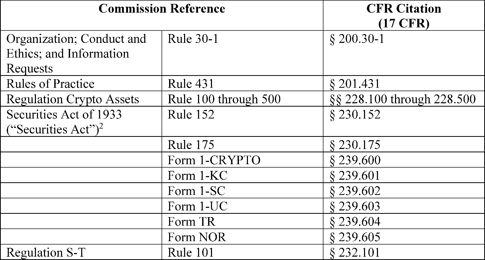
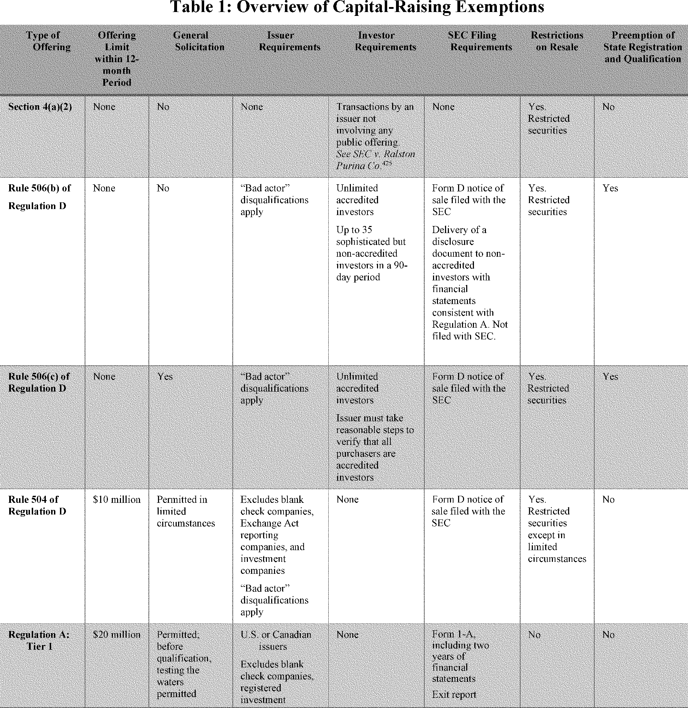

Daily Digest — 2026-08-21
Full observed listing for this day — every item our collectors observed for this publication day, mechanical rules applied, frozen at end of day. This digest is the canonical record.
All items below cite the govinfo package (and granule, where applicable) they summarize. Selection is mechanical; each item states the rule that included it. See the Coverage Statement at the end for a full accounting of what was published, what was summarized, and what was excluded and why.
Day in Review
The digest carries eight bills reported in the House, covering topics such as amendments to the National Defense Authorization Act for Fiscal Year 2017, specific land claims and exchanges, environmental conservation, and educational policy. Two bills were introduced in the House. The Congressional Record includes 33 House entries, 4 Senate entries, 35 extensions of remarks, and 6 Daily Digest items.
The Federal Register carries 17 final rules and 6 proposed rules. Final rules include Department of Labor revisions related to discrimination and veterans' assistance, Office of Surface Mining Reclamation and Enforcement decisions, Environmental Protection Agency pesticide tolerances, and National Marine Fisheries Service commercial harvest closures and quota transfers. The Coast Guard established temporary security and safety zones. Proposed rules address financial regulations, international airport designations, and government records. The digest also features 93 Federal Register notices and 151 agency press releases.
The digest carries 72 appellate court opinions and 5 opinions from national courts. The Tenth Circuit affirmed a sentencing decision and convictions for controlled substances offenses. The Eleventh Circuit vacated a Department of Transportation order on antitrust immunity. The Federal Circuit affirmed an employee termination. The Fifth Circuit affirmed debt nondischargeability in bankruptcy. The Seventh Circuit reversed an order suppressing evidence. The U.S. Court of International Trade issued rulings on rules of origin and antidumping duty reviews.
Composed from the summarized items below and the day's mechanical counts; all specifics are cited in their sections.
1. Congressional Floor Activity
Source: Congressional Record (CREC), issue observed 2026-08-21, covering proceedings of 2026-08-20. Published by govinfo 2026-08-21T11:23:28Z; observed by our collector 2026-08-21T11:41:47Z. Total issue size: 78 granule(s).
1.1 Senate
No Senate floor items met the selection thresholds. 4 floor granule(s) are accounted for in the Coverage Statement.
1.2 House of Representatives
No House floor items met the selection thresholds. 33 floor granule(s) are accounted for in the Coverage Statement.
1.3 Recorded Votes
No recorded votes were published in this issue of the Congressional Record.
2. Legislation
This section outlines 8 bills, including one on NOAA sexual harassment prevention and the No Antisemitism in Education Act; the others cover land claims, reauthorizations, and conservation.
Source: Congressional Bills (BILLS), text versions published 2026-08-21 to 2026-08-21.
2.1 Counts by Stage
| Stage (bill text version) | Count |
|---|---|
| Introduced (ih/is) | 2 |
| Reported (rh/rs) | 8 |
| Engrossed (eh/es) | 0 |
| Enrolled (enr) | 0 |
| Other versions | 0 |
| Total bill texts published | 10 |
2.2 Bills Listed by Mechanical Rule
In plain terms This section outlines 8 bills, including one on NOAA sexual harassment prevention and the No Antisemitism in Education Act; the others cover land claims, reauthorizations, and conservation.
Bills below are listed because they matched at least one listing rule; the matching rule is stated per item. All other bill texts are counted above and accounted for in the Coverage Statement.
- H. R. 2406 (rh) — 119 HR 2406 RH: National Oceanic and Atmospheric Administration Sexual Harassment and Assault Prevention Improvements Act of 2025 — This bill amends the National Defense Authorization Act for Fiscal Year 2017 to address sexual harassment and sexual assault involving National Oceanic and Atmospheric Administration (NOAA) personnel. It updates the policy on prevention and response, incorporating "equal employment" and requiring detailed data, including case synopses and disciplinary actions, in reports. The bill revises annual reporting requirements, amends criminal referral procedures, and specifies conditions for disclosing victims' personally identifying information while ensuring privacy, also directing NOAA to update restricted reporting policies for confidential disclosure.
- In plain terms This bill changes the National Defense Authorization Act for Fiscal Year 2017 to update NOAA's policy on preventing and responding to sexual harassment and assault, requiring detailed data in reports and revised criminal referral procedures.
- Included because: BILLS-SEL-01 — reached stage: reported/enrolled/calendar (document dated 2026-08-20)
- Source: BILLS-119hr2406rh (opens in a new tab)
- H. R. 2827 (rh) — 119 HR 2827 RH: To provide for the equitable settlement of certain Indian land disputes regarding land in Illinois, and for other purposes. — This bill confers jurisdiction on the United States Court of Federal Claims to hear a specific land claim by the Miami Tribe of Oklahoma. The claim pertains to land in Illinois under the 1805 Treaty of Grouseland, and the court's jurisdiction for this claim is not subject to statutes of limitations. This jurisdiction expires one year after enactment unless a claim is filed, and all other land claims by the Miami Tribe regarding land in Illinois are extinguished.
- In plain terms This bill gives the U.S. Court of Federal Claims authority to hear a Miami Tribe of Oklahoma land claim in Illinois from the 1805 Treaty of Grouseland, free from time limits, for one year.
- Included because: BILLS-SEL-01 — reached stage: reported/enrolled/calendar (document dated 2026-08-20)
- Source: BILLS-119hr2827rh (opens in a new tab)
- H. R. 309 (rh) — 119 HR 309 RH: National Law Enforcement Officers Remembrance, Support, and Community Outreach Act — This bill authorizes the Secretary of the Interior to award annual grants to the National Law Enforcement Officers Memorial Fund for the National Law Enforcement Museum's operations and programs. Beginning in the first fiscal year after enactment and for six subsequent fiscal years, $6,000,000 grants are authorized to support community outreach, public education, and officer safety and wellness initiatives. Grant conditions include providing free museum admission for law enforcement personnel and families of fallen officers, weekly free admission hours for the public, and allowing annual federal audits of the Fund's financial statements.
- In plain terms This bill authorizes the Interior Secretary to provide $6,000,000 annual grants for seven fiscal years to the National Law Enforcement Museum for operations, education, and officer support, requiring free admission and audits.
- Included because: BILLS-SEL-01 — reached stage: reported/enrolled/calendar (document dated 2026-08-20)
- Source: BILLS-119hr309rh (opens in a new tab)
- H. R. 3276 (rh) — 119 HR 3276 RH: To direct the Secretary of the Interior to establish the Urban Bird Treaty Program. — This bill directs the Director of the United States Fish and Wildlife Service to establish the "Urban Bird Treaty Program" for voluntary bird and habitat conservation in urban areas. The program will support entities in protecting, restoring, and enhancing urban habitats, reducing hazards, engaging in scientific activities, and educating communities about bird conservation. The bill also establishes a competitive grant program for research and management activities, authorizing $200,000 for appropriation annually for fiscal years 2027 through 2033.
- In plain terms This bill directs the US Fish and Wildlife Service to create an Urban Bird Treaty Program for bird and habitat conservation in urban areas, authorizing $200,000 annually for grants from fiscal years 2027 to 2033.
- Included because: BILLS-SEL-01 — reached stage: reported/enrolled/calendar (document dated 2026-08-20)
- Source: BILLS-119hr3276rh (opens in a new tab)
- H. R. 6893 (rh) — 119 HR 6893 RH: Chesapeake Bay Watershed Advancement for Training, Education, Restoration, and Science (WATERS) Act — This bill reauthorizes the National Oceanic and Atmospheric Administration (NOAA) Chesapeake Bay Office, outlining its responsibilities and program activities. It expands the Office's focus to include coastal hazards and education, detailing program activities like ensuring scientific project merit, consulting with the Chesapeake Executive Council, and supporting an integrated coastal observations system. The legislation also authorizes a Chesapeake Bay watershed education and training program and a Coastal Living Resources Management and Habitat Program, and requires biennial reports to Congress on the Office's progress.
- In plain terms This bill allows the NOAA Chesapeake Bay Office to continue, expanding its focus to coastal hazards and education, detailing program activities, authorizing education and habitat programs, and requiring biennial reports to Congress.
- Included because: BILLS-SEL-01 — reached stage: reported/enrolled/calendar (document dated 2026-08-20)
- Source: BILLS-119hr6893rh (opens in a new tab)
- H. R. 7889 (rh) — 119 HR 7889 RH: Advancing Water Research and Collaboration Act of 2025 — H.R. 7889, titled the "Advancing Water Research and Collaboration Act of 2025," proposes amendments to the Water Resources Research Act of 1984. The bill seeks to reauthorize the water resources research and technology institutes program. It authorizes $16,000,000 to be appropriated for each of fiscal years 2026 through 2029 to carry out the program, and specifies changes to funding for research on water problems of regional or interstate nature.
- In plain terms This bill amends the Water Resources Research Act of 1984, allowing the water resources research program to continue and authorizing $16,000,000 for each of fiscal years 2026 through 2029, with funding changes for regional water problems.
- Included because: BILLS-SEL-01 — reached stage: reported/enrolled/calendar (document dated 2026-08-20)
- Source: BILLS-119hr7889rh (opens in a new tab)
- H. R. 8476 (rh) — 119 HR 8476 RH: No Antisemitism in Education Act of 2026 — H.R. 8476, titled the "No Antisemitism in Education Act of 2026," requires educational agencies and institutions receiving Federal financial assistance to treat discrimination motivated by antisemitism as vigorously as other forms of discrimination prohibited by Title VI of the Civil Rights Act of 1964. Federal departments and agencies, along with educational entities, are directed to consider the definition of antisemitism provided in the bill for determining discriminatory intent. The bill's provisions are enforceable by mechanisms available for Section 601 of the Civil Rights Act of 1964.
- In plain terms This bill requires educational institutions receiving federal funds to treat antisemitism discrimination like other discrimination under Title VI of the Civil Rights Act of 1964, using the bill's definition of antisemitism.
- Included because: BILLS-SEL-01 — reached stage: reported/enrolled/calendar (document dated 2026-08-20)
- Source: BILLS-119hr8476rh (opens in a new tab)
3. Federal Register
This section contains 17 final rules, led by NIST traffic and conduct updates and Department of Labor employment rules; the rest involve fisheries, security zones, and fee adjustments.
Source: Federal Register (FR), issue of 2026-08-21.
3.1 Counts by Document Type
| Document type | Count |
|---|---|
| Rules | 17 |
| Proposed rules | 6 |
| Notices | 93 |
| Presidential documents | 0 |
| Total FR documents | 116 |
3.2 Rules Published
In plain terms This section contains 17 final rules, led by NIST traffic and conduct updates and Department of Labor employment rules; the rest involve fisheries, security zones, and fee adjustments.
DEPARTMENT OF COMMERCE
- Traffic and Conduct on the Grounds of Certain National Institute of Standards and Technology Sites (2026-17082; 15 CFR Part 265) — By this rule, NIST amends its regulations governing traffic and conduct at its sites in Gaithersburg, Maryland, and Boulder and Fort Collins, Colorado. This rule amends those regulations by removing excessive and redundant restrictions on personal conduct, updating or removing sections with outdated references or requirements, and broadening an exception regarding the use of service dogs. This action is necessary to ensure that NIST's regulations conform to the scope of the underlying statutory authorities and to reduce regulatory complexity, redundancy, and burden. This action is intended to promote statutory conformity, administrative efficiency, and accessibility for people with disabilities, without imposing any new obligations or costs on the public. Action: Final rule. Dates: The rule is effective August 21, 2026.
- In plain terms This rule amends NIST's traffic and conduct regulations at its Maryland and Colorado sites, removing outdated restrictions, updating requirements, and broadening service dog exceptions for efficiency and accessibility.
- Included because: FR-SEL-01 — document type: final rule (all listed)
- Source: FR-2026-08-21 / 2026-17082 (opens in a new tab)
- Fisheries of the Caribbean, Gulf of America, and South Atlantic; 2026 Commercial Closure for the Scamp and Yellowmouth Grouper Complex in the South Atlantic (2026-17109; 50 CFR Part 622) — NMFS implements an accountability measure (AM) for the commercial harvest of the scamp and yellowmouth grouper complex in South Atlantic Federal waters. NMFS projects that commercial landings of the scamp and yellowmouth grouper complex will reach the commercial annual catch limit (ACL) for 2026. Therefore, NMFS closes the commercial sector of the scamp and yellowmouth grouper complex in South Atlantic Federal waters to protect the scamp and yellowmouth grouper resource from overfishing. Action: Temporary rule; closure. Dates: This temporary rule is effective from August 24, 2026, through December 31, 2026.
- In plain terms NMFS is closing commercial fishing for scamp and yellowmouth grouper in South Atlantic federal waters for 2026, as projected landings will reach the yearly fishing limit, to prevent overfishing.
- Included because: FR-SEL-01 — document type: final rule (all listed)
- Source: FR-2026-08-21 / 2026-17109 (opens in a new tab)
- Fisheries of the South Atlantic; Commercial Closure for Blueline Tilefish in the South Atlantic (2026-17113; 50 CFR Part 622) — NMFS implements an accountability measure for the commercial harvest of blueline tilefish in the exclusive economic zone (EEZ) of the South Atlantic. NMFS estimates that commercial landings of blueline tilefish will reach the commercial annual catch limit (ACL) for the 2026 fishing year. Accordingly, NMFS closes the commercial sector of blueline tilefish in the South Atlantic EEZ to protect the blueline tilefish resource from overfishing. Action: Temporary rule; closure. Dates: This temporary rule is effective from August 24, 2026, through December 31, 2026.
- In plain terms NMFS is closing commercial blueline tilefish fishing in South Atlantic federal waters for 2026 because estimated landings will reach the yearly fishing limit, acting to prevent overfishing.
- Included because: FR-SEL-01 — document type: final rule (all listed)
- Source: FR-2026-08-21 / 2026-17113 (opens in a new tab)
- Fisheries of the South Atlantic; 2026 Commercial Closure of Red Snapper in the South Atlantic (2026-17120; 50 CFR Part 622) — NMFS implements an accountability measure for red snapper in the exclusive economic zone (EEZ) of the South Atlantic. NMFS projects that commercial landings of red snapper will reach the commercial annual catch limit (ACL) for the 2026 fishing year. Therefore, NMFS is closing the commercial sector for red snapper in the South Atlantic EEZ. This closure is necessary to protect the red snapper resource. Action: Temporary rule; closure. Dates: This temporary rule is effective from August 24, 2026, through December 31, 2026.
- In plain terms NMFS is closing commercial red snapper fishing in South Atlantic federal waters for 2026 because projected landings will reach the yearly fishing limit, acting to protect the red snapper resource.
- Included because: FR-SEL-01 — document type: final rule (all listed)
- Source: FR-2026-08-21 / 2026-17120 (opens in a new tab)
- Fisheries of the Northeastern United States; Summer Flounder Fishery; Quota Transfer From North Carolina to Massachusetts (2026-17129; 50 CFR Part 648) — NMFS announces that the State of North Carolina is transferring a portion of its 2026 commercial summer flounder quota to the Commonwealth of Massachusetts. This adjustment to the 2026 fishing year quota is necessary to comply with the Summer Flounder, Scup, and Black Sea Bass Fishery Management Plan (FMP) quota transfer provisions. This announcement informs the public of the revised 2026 commercial quotas for North Carolina and Massachusetts. Action: Temporary rule; quota transfer. Dates: Effective August 20, 2026, through December 31, 2026.
- In plain terms NMFS announces North Carolina is transferring part of its 2026 commercial summer flounder quota to Massachusetts, revising the 2026 commercial quotas for both states to comply with the fishery management plan.
- Included because: FR-SEL-01 — document type: final rule (all listed)
- Source: FR-2026-08-21 / 2026-17129 (opens in a new tab)
- Fisheries of the Northeastern United States; Mackerel, Squid, and Butterfish; 2026 Illex Squid Quota Harvested (2026-17148; 50 CFR Part 648) — NMFS is closing the directed Illex squid fishery in Federal waters based on a projection that 96 percent of the 2026 domestic annual harvest (DAH) will be harvested. This closure is effective 0001 hour (hr) local time on August 23, 2026, through 2400 hr local time on December 31, 2026. This action is necessary to comply with the regulations implementing the Mackerel, Squid, and Butterfish Fishery Management Plan (FMP), and is intended to prevent the 2026 Illex squid annual catch limit from being exceeded. Action: Temporary rule; possession limit adjustment. Dates: Effective 0001 hr local time on August 23, 2026, through 2400 hr local time on December 31, 2026.
- In plain terms NMFS is closing the directed Illex squid fishery in Federal waters from August 23, 2026, through December 31, 2026, because 96 percent of the 2026 annual harvest is projected to be taken.
- Included because: FR-SEL-01 — document type: final rule (all listed)
- Source: FR-2026-08-21 / 2026-17148 (opens in a new tab)
DEPARTMENT OF HOMELAND SECURITY
- Security Zone; Philippine Sea, Pacific Ocean, Apra Harbor, Guam (2026-17097; 33 CFR Part 165) — The Coast Guard is establishing a temporary security zone for certain navigable waters of the Philippine Sea in the Pacific Ocean in Apra Harbor, Guam. The Coast Guard will only enforce this rule when the United States government officials or other persons under the protection of the Secret Service are present or expected to be present. This action is necessary to protect the official party, public, and surrounding waterways from terrorist acts, sabotage, or other subversive acts. Entry of vessels or persons into this zone is prohibited unless specifically authorized by the Captain of the Port, Forces Micronesia/Sector Guam. Action: Temporary final rule. Dates: This rule is effective from 9 a.m. ChST on August 27, 2026 through 4 p.m. ChST on August 27, 2026. For the purposes of enforcement, actual notice by Marine Broadcast will be used from 0900-1600 August 27, 2026.
- In plain terms The Coast Guard is establishing a temporary security zone in Apra Harbor, Guam, to protect US government officials, prohibiting vessel entry without specific authorization when officials are present.
- Included because: FR-SEL-01 — document type: final rule (all listed)
- Source: FR-2026-08-21 / 2026-17097 (opens in a new tab)
- Safety Zone: Piers Park, Boston Inner Harbor, East Boston MA (2026-17098; 33 CFR Part 165) — The Coast Guard is establishing a temporary safety zone for a portion of the navigable waters of Boston Inner Harbor, in the vicinity of Piers Park, East Boston, Massachusetts. The temporary safety zone is needed to protect the maritime public and event participants from potential hazards created by a swim event taking place in a heavily trafficked portion of the harbor scheduled for September 13, 2026. Entry of vessels or persons into this zone is prohibited unless specifically authorized by the Captain of the Port Sector Boston, or a designated representative. Action: Temporary final rule. Dates: This rule is effective from 7 a.m. through noon on September 13, 2026.
- In plain terms The Coast Guard is establishing a temporary safety zone in Boston Inner Harbor for a swim event on September 13, 2026, prohibiting vessel entry without authorization to protect public and participants.
- Included because: FR-SEL-01 — document type: final rule (all listed)
- Source: FR-2026-08-21 / 2026-17098 (opens in a new tab)
- Security Zone; Ohio River, Cincinnati, OH (2026-17131; 33 CFR Part 165) — The Coast Guard is establishing a temporary security zone for all navigable waters of the Ohio River, extending the entire width of the river, between mile markers (MM) 461 to MM 473. This security zone is needed to provide waterside security and protection of persons under the protection of the United States Secret Service during a visit to Cincinnati, OH. During the enforcement period, entry into, transiting, or anchoring in the security zone is prohibited unless specifically authorized by the Captain of the Port, Ohio Valley (COTP) or a designated on-scene U.S. Coast Guard representative. Action: Temporary final rule. Dates: This rule is effective from 12:01 a.m. on August 20, 2026, through 11:59 p.m. on August 24, 2026.
- In plain terms The Coast Guard is establishing a temporary security zone on the Ohio River, between mile markers 461 and 473, to protect Secret Service personnel during a Cincinnati visit, prohibiting unauthorized entry.
- Included because: FR-SEL-01 — document type: final rule (all listed)
- Source: FR-2026-08-21 / 2026-17131 (opens in a new tab)
DEPARTMENT OF JUSTICE
- Inflation Adjustment for EOIR OBBBA Fees; Fiscal Year 2027 (2026-17146; 8 CFR Part 1103) — The Department of Justice (“Department”) is making inflationary adjustments to immigration-related fees for filings with the Executive Office for Immigration Review (“EOIR”) as required by the One Big Beautiful Bill Act for Fiscal Year (“FY”) 2027. Action: Final rule. Dates: This rule is effective October 1, 2026.
- In plain terms The Department of Justice is making inflationary adjustments to immigration fees for Executive Office for Immigration Review filings for Fiscal Year 2027, as required by the One Big Beautiful Bill Act.
- Included because: FR-SEL-01 — document type: final rule (all listed)
- Source: FR-2026-08-21 / 2026-17146 (opens in a new tab)
DEPARTMENT OF LABOR
- Rescission of Executive Order 11246 Implementing Regulations (2026-17114; 41 CFR Parts 60-1, 60-2, 60-3, 60-4, 60-20, 60-30, 60-40, 60-50, and 60-999) — On January 21, 2025, President Trump issued Executive Order 14173, “Ending Illegal Discrimination and Restoring Merit-Based Opportunity,” which revoked Executive Order 11246. Accordingly, the U.S. Department of Labor publishes this final rule to rescind the implementing regulations for Executive Order 11246. Action: Final rule. Dates: This rule is effective on October 26, 2026.
- In plain terms The U.S. Department of Labor issues this rule to cancel the regulations for Executive Order 11246, because President Trump's Executive Order 14173 revoked it on January 21, 2025.
- Included because: FR-SEL-01 — document type: final rule (all listed)
- Source: FR-2026-08-21 / 2026-17114 (opens in a new tab)
- Modifications to the Regulations Implementing Section 503 of the Rehabilitation Act of 1973, as Amended (2026-17115; 41 CFR Parts 60-30 and 60-741) — The U.S. Department of Labor is revising its implementing regulations for Section 503 of the Rehabilitation Act of 1973, as amended (Section 503). The revisions align the regulations with applicable law and recent executive orders, including Executive Order 14173, “Ending Illegal Discrimination and Restoring Merit-Based Opportunity,” and Executive Order 14219, “Ensuring Lawful Governance and Implementing the President's `Department of Government Efficiency' Deregulatory Initiative.” Action: Final rule. Dates: This rule is effective September 21, 2026, except for amendatory instruction 1 (amendment to 41 CFR part 60-30) which is effective on December 21, 2026.
- In plain terms The U.S. Department of Labor is revising regulations for Section 503 of the Rehabilitation Act of 1973 to align with recent laws and Executive Orders 14173 and 14219.
- Included because: FR-SEL-01 — document type: final rule (all listed)
- Source: FR-2026-08-21 / 2026-17115 (opens in a new tab)
- Modifications to the Regulations Implementing the Vietnam Era Veterans' Readjustment Assistance Act of 1974, as Amended (2026-17116; 41 CFR Part 60-300) — The U.S. Department of Labor publishes this final rule to revise its implementing regulations for the Vietnam Era Veterans' Readjustment Assistance Act of 1974, as amended (VEVRAA). These revisions will align the regulations with Executive Order 14173 and remove the VEVRAA regulations' cross-references to the Executive Order 11246 authority. Executive Order 11246 was revoked by Executive Order 14173 on January 21, 2025. This final rule also makes technical revisions to update the VEVRAA regulations' jurisdictional thresholds, which were adjusted for inflation by the Federal Acquisition Regulation Council on October 1, 2025. Action: Final rule. Dates: This rule is effective September 21, 2026.
- In plain terms The Department of Labor revises regulations for the Vietnam Era Veterans' Readjustment Assistance Act of 1974, aligning them with Executive Order 14173 (which revoked EO 11246 on January 21, 2025) and updating jurisdictional thresholds adjusted October 1, 2025.
- Included because: FR-SEL-01 — document type: final rule (all listed)
- Source: FR-2026-08-21 / 2026-17116 (opens in a new tab)
DEPARTMENT OF THE INTERIOR
- Montana Regulatory Program (2026-17055; 30 CFR Part 926) — The Office of Surface Mining Reclamation and Enforcement (OSM) is not approving, with one exception, an amendment to the Montana regulatory program under the Surface Mining Control and Reclamation Act of 1977 (SMCRA or the Act). The Montana legislature, specifically Montana House Bill 328, proposes to add a definition of affected drainage basin to the Montana Code Annotated (MCA). Additionally, House Bill 328 proposes changes to the Montana Code Annotated, pertaining to bond release application requirements. Action: Final rule; not approving, with one exception. Dates: The effective date is September 21, 2026.
- In plain terms The Office of Surface Mining Reclamation and Enforcement is mostly not approving an amendment to Montana's mining program that would add an "affected drainage basin" definition and change bond release rules.
- Included because: FR-SEL-01 — document type: final rule (all listed)
- Source: FR-2026-08-21 / 2026-17055 (opens in a new tab)
ENVIRONMENTAL PROTECTION AGENCY
- Carboxin; Pesticide Tolerances (2026-17088) — This regulation establishes tolerances for residues of carboxin in or on multiple crops that are discussed later in this document. Under the Federal Food, Drug, and Cosmetic Act (FFDCA), UPL Delaware Inc. submitted a petition to EPA requesting that EPA establish a maximum permissible level for residues of this pesticide in or on the identified commodities. Action: Final rule. Dates: This regulation is effective August 21, 2026. Objections and requests for hearings must be received on or before October 20, 2026 and must be filed in accordance with the instructions provided in 40 CFR part 178 (see also Unit I.C. of this document).
- In plain terms This regulation sets maximum permissible levels for carboxin pesticide residues on various crops, following a petition from UPL Delaware Inc. to the EPA under the Federal Food, Drug, and Cosmetic Act.
- Included because: FR-SEL-01 — document type: final rule (all listed)
- Source: FR-2026-08-21 / 2026-17088 (opens in a new tab)
INTERNAL REVENUE SERVICE
- Income Taxes (2026-17154; 26 CFR Part 1) — This rule, published by the Office of the Federal Register, corrects an editorial or technical error in the Code of Federal Regulations. It reinstates § 1.987-1T within Title 26, Part 1, of the Code of Federal Regulations, which addresses income taxes. The reinstated section provides temporary rules for the scope, definitions, and special rules concerning dollar Qualified Business Units (QBUs) and the application of sections 987 and 988, including an election for Controlled Foreign Corporations.
- In plain terms The Office of the Federal Register reinstated § 1.987-1T in 26 CFR Part 1, which provides temporary income tax rules for dollar Qualified Business Units and sections 987 and 988.
- Included because: FR-SEL-01 — document type: final rule (all listed)
- Source: FR-2026-08-21 / 2026-17154 (opens in a new tab)
NUCLEAR REGULATORY COMMISSION
- Environmental Protection Regulations for Domestic Licensing and Related Regulatory Functions (2026-17145; 10 CFR Part 51) — This rule is a correction published by the Office of the Federal Register. It corrects an editorial or technical error in Title 10 of the Code of Federal Regulations, section 51.53. The correction modifies specific wording in paragraph (c)(3) concerning environmental protection regulations for domestic licensing and related regulatory functions.
- In plain terms The Office of the Federal Register corrected an error in 10 CFR 51.53, modifying wording in paragraph (c)(3) regarding environmental protection regulations for domestic licensing.
- Included because: FR-SEL-01 — document type: final rule (all listed)
- Source: FR-2026-08-21 / 2026-17145 (opens in a new tab)
3.3 Proposed Rules Published
In plain terms This section presents 6 proposed rules, led by new SEC rules for crypto assets and CFTC amendments for commodity pool operators; other proposals cover an airport designation withdrawal and Trump account guidance.
COMMODITY FUTURES TRADING COMMISSION
- Commodity Pool Operators and Commodity Trading Advisors: Reduction of Duplicative Regulation Through Intermediary Registration Exemptions; Expansion of the Exemption for Small Commodity Pools (2026-17079; 17 CFR Part 4) — The Commodity Futures Trading Commission (“Commission” or “CFTC”) is proposing several amendments to its registration requirements for certain commodity pool operators (“CPOs”) and commodity trading advisors (“CTAs”) to reduce duplicative and overlapping regulation and reflect inflation (“Proposal”). The Proposal would add an exemption from CPO registration for certain investment advisers registered with the Securities and Exchange Commission (“Registered Investment Advisers” or “RIAs”) in relation to commodity pools for which the participants are limited to certain sophisticated investors and which meet other conditions; add a related registration exemption for CTAs; and increase the total gross capital contributions threshold in the CPO registration exemption for small commodity pools (commonly referred to as the “Small Pool Exemption”) to account for inflation. The Commission preliminarily intends for the Proposal, if adopted, to supersede certain no-action positions issued by the Commission's Market Participants Division (“MPD”). Action: Notice of proposed rulemaking. Dates: Comments must be in writing and received by October 5, 2026.
- In plain terms The CFTC proposes to amend registration rules for commodity pool operators and trading advisors, seeking to reduce overlapping regulation and reflect inflation by adding exemptions for certain investment advisers and increasing a small pool threshold.
- Included because: FR-SEL-02 — document type: proposed rule (all listed)
- Source: FR-2026-08-21 / 2026-17079 (opens in a new tab)
- Request for Comment on the Listing of Compute Derivatives Contracts (2026-17163; 17 CFR Parts 1 and 38) — The Commodity Futures Trading Commission (“CFTC” or “Commission”) is seeking public responses to this Request for Comment to better inform its understanding and oversight of derivatives markets in compute. Action: Request for comment. Dates: Comments must be received on or before October 20, 2026.
- In plain terms The Commodity Futures Trading Commission is seeking public comments to better understand and oversee derivatives markets in compute.
- Included because: FR-SEL-02 — document type: proposed rule (all listed)
- Source: FR-2026-08-21 / 2026-17163 (opens in a new tab)
DEPARTMENT OF HOMELAND SECURITY
- Withdrawal of International Airport Designation of Chalk Seaplane Base (2026-17108; 8 CFR Part 100; 19 CFR Part 122) — U.S. Customs and Border Protection (CBP) is proposing to withdraw the international airport designation of Chalk Seaplane Base, now operating as Miami Seaplane Base. This proposal is based on evidence that the facility at this location has not been in compliance with CBP regulatory and security standards and the amount of business clearing through the airport does not justify continued maintenance of inspection equipment and personnel. The proposed change is part of CBP's continued efforts to use its personnel, facilities, and resources more efficiently and to provide better service to carriers, importers, and the public. Action: Notice of proposed rulemaking. Dates: Send comments on or before October 20, 2026.
- In plain terms U.S. Customs and Border Protection proposes to withdraw the international airport designation of Miami Seaplane Base due to non-compliance with standards and insufficient business to justify continued inspection services.
- Included because: FR-SEL-02 — document type: proposed rule (all listed)
- Source: FR-2026-08-21 / 2026-17108 (opens in a new tab)
- Genealogy Program Regulations To Clarify the Impact of Federal Records Requirements (2026-17119; 8 CFR Part 103) — The U.S. Department of Homeland Security (DHS) proposes to amend its regulation governing genealogy program related records requests to revise its genealogy program regulations to clarify the impact of statutory and regulatory federal records requirements. This is necessary for individuals who request immigration records through the agency's genealogy program to better understand which records may be requested. Action: Notice of proposed rulemaking. Dates: Written comments must be submitted on or before October 20, 2026. The electronic Federal Docket Management System will accept comments prior to midnight eastern time at the end of that day.
- In plain terms The U.S. Department of Homeland Security proposes to amend its genealogy program regulations to clarify how federal records requirements impact requests for immigration records, helping requesters understand available documents.
- Included because: FR-SEL-02 — document type: proposed rule (all listed)
- Source: FR-2026-08-21 / 2026-17119 (opens in a new tab)
DEPARTMENT OF THE TREASURY
- Guidance on Eligible Investments for Trump Accounts (2026-17123; 26 CFR Part 1) — This document contains proposed regulations relating to Trump accounts. The proposed regulations would provide guidance regarding eligible investments, which are the only assets in which Trump account funds may be invested before the first day of the calendar year in which the account beneficiary attains age 18. The proposed regulations would affect account beneficiaries and trustees of Trump accounts. Action: Notice of proposed rulemaking. Dates: Written or electronic comments and requests for a public hearing must be received by October 20, 2026.
- In plain terms These proposed regulations for Trump accounts offer guidance on eligible investments, which are the only assets funds may be invested in before the beneficiary turns 18, affecting beneficiaries and trustees.
- Included because: FR-SEL-02 — document type: proposed rule (all listed)
- Source: FR-2026-08-21 / 2026-17123 (opens in a new tab)
SECURITIES AND EXCHANGE COMMISSION
- Regulation Crypto Assets (2026-17183; 17 CFR Parts 200, 201, 228, 230, 232, and 239) — The Securities and Exchange Commission (“Commission”) is proposing new rules to create a tailored offering regime for certain investment contracts involving crypto assets. The proposed offering regime is intended to facilitate capital formation and accommodate innovation within the crypto asset markets while, at the same time, ensuring that investors are adequately protected and provided with the information they need to make informed investment decisions. The proposed rules would be set forth in a new regulation titled “Regulation Crypto Assets” and would include two exemptions from the registration requirements of section 5 of the Securities Act of 1933. The first exemption would permit offerings of up to $5 million during a four-year period. The second exemption would permit offerings of up to $75 million during each 12-month period. Under both exemptions, issuers would be required to make certain principles-based narrative disclosures available to their investors. In addition, issuers under the second exemption would be required to provide financial statements and would be subject to ongoing reporting requirements. [official summary truncated; see source] Action: Proposed rule. Dates: This release was published in the Federal Register on August 21, 2026. Comments should be received on or before October 20, 2026.
- In plain terms The SEC proposes "Regulation Crypto Assets," new rules for crypto asset investment contracts, with registration exemptions for up to $5 million over four years or $75 million annually, requiring disclosures.
- Included because: FR-SEL-02 — document type: proposed rule (all listed)
- Source: FR-2026-08-21 / 2026-17183 (opens in a new tab)

Source graphic 1 of 68 from 2026-17183.
Source graphic 2 of 68 from 2026-17183.- Graphics not rendered here: 66 of 68 — see the source PDF (opens in a new tab).
3.4 Notices and Presidential Documents
Notices are summarized only when they match a listing rule; all are counted in 3.1 and in the Coverage Statement. Presidential documents in the FR are always listed.
No notices or presidential documents matched a listing rule.
4. Enacted Laws
Source: Public and Private Laws (PLAW) published 2026-08-21.
No laws were published in this range.
5. Judicial Activity
This section contains 77 judicial items from multiple Circuit Courts of Appeals, mostly affirming or dismissing lower court decisions in diverse civil and criminal cases.
Source: United States Courts Opinions (USCOURTS): opinions observed 2026-08-21 by our collector; each opinion states its own issue date beside its listing (how our clocks work).
Completeness disclosure (standing): USCOURTS carries opinions from approximately 140 participating appellate, district, bankruptcy, and national federal courts. Unlike the Congressional Record and the Federal Register, which are the complete official record of their branches, USCOURTS is participation-based and is NOT the complete federal judicial record. Courts post opinions with delay — typically over several days — so a day's digest carries the opinions that became available that day, whatever date each was issued.
5.1 Appellate and National Court Opinions
In plain terms This section contains 77 judicial items from multiple Circuit Courts of Appeals, mostly affirming or dismissing lower court decisions in diverse civil and criminal cases.
Appellate and national court opinions are summarized; district and bankruptcy opinions are counted in 5.2 and in the Coverage Statement.
United States Court of Appeals for the District of Columbia Circuit
- Adsync Technologies, Inc. v. FAA (No. 25-01148; filed 2026-08-20) — The D.C. Circuit affirmed an order by the Federal Aviation Administration (FAA) regarding a government contract for a Tower Simulation System. Adsync Technologies, Inc. protested the award of a hardware contract to Adacel Systems, Inc. after a rebid. The court found that the FAA did not violate its Acquisition Management System Guidance and that substantial evidence supported the FAA's determination to reject a portion of Adsync's proposed price reductions in the rebid.
- In plain terms The D.C. Circuit affirmed an FAA order for a Tower Simulation System contract, finding the FAA followed its guidance and had sufficient evidence to reject Adsync's proposed price reductions.
- Included because: USCOURTS-SEL-01 — appellate court opinion (all listed) (document dated 2026-08-20)
- Source: USCOURTS-caDC-25-01148 / USCOURTS-caDC-25-01148-0 (opens in a new tab)
United States Court of Appeals for the Eighth Circuit
- United States v. Holsey Ellingburg, Jr. (No. 23-03129; filed 2024-08-23) — The Eighth Circuit Court of Appeals issued a notification to counsel regarding the case "United States v. Holsey Ellingburg, Jr." The court stated it had issued an opinion and entered judgment in accordance with that opinion. The notice also provided instructions for post-submission procedures, including the 14-day period for filing petitions for rehearing.
- In plain terms The Eighth Circuit Court of Appeals issued an opinion and entered judgment in "United States v. Holsey Ellingburg, Jr.," with a 14-day period for filing petitions for rehearing.
- Included because: USCOURTS-SEL-01 — appellate court opinion (all listed) (document dated 2026-08-20)
- Source: USCOURTS-ca8-23-03129 / USCOURTS-ca8-23-03129-0 (opens in a new tab)
- United States v. Holsey Ellingburg, Jr. (No. 23-03129; filed 2026-08-20) — The Eighth Circuit Court of Appeals issued a notification to counsel concerning the case "United States v. Holsey Ellingburg, Jr." The court indicated that an opinion had been issued and judgment entered consistent with that opinion. The notice detailed post-submission procedures, including the deadline for petitions for rehearing.
- In plain terms The Eighth Circuit Court of Appeals issued an opinion and entered judgment in "United States v. Holsey Ellingburg, Jr.," detailing post-submission procedures and the deadline for petitions for rehearing.
- Included because: USCOURTS-SEL-01 — appellate court opinion (all listed) (document dated 2026-08-20)
- Source: USCOURTS-ca8-23-03129 / USCOURTS-ca8-23-03129-1 (opens in a new tab)
- United States v. Joshua Nesbitt (No. 24-02357; filed 2026-08-20) — The Eighth Circuit Court of Appeals informed counsel that it had issued an opinion and entered judgment in the cases "United States v. Joshua Nesbitt" and "United States v. Shawn Burkhalter." The notification, dated August 20, 2026, outlined procedures for post-submission filings. It specifically mentioned the 14-day period for submitting petitions for rehearing.
- In plain terms The Eighth Circuit Court of Appeals issued an opinion and judgment in "United States v. Joshua Nesbitt" and "United States v. Shawn Burkhalter" on August 20, 2026, outlining a 14-day period for rehearing petitions.
- Included because: USCOURTS-SEL-01 — appellate court opinion (all listed) (document dated 2026-08-20)
- Source: USCOURTS-ca8-24-02357 / USCOURTS-ca8-24-02357-0 (opens in a new tab)
- United States v. Shawn Burkhalter (No. 24-02382; filed 2026-08-20) — The Eighth Circuit Court of Appeals issued a notification to counsel regarding the cases "United States v. Joshua Nesbitt" and "United States v. Shawn Burkhalter." The court stated that an opinion had been issued and judgment entered in these cases. The notice provided information on post-submission procedures, including the 14-day period for filing petitions for rehearing.
- In plain terms The Eighth Circuit Court of Appeals issued an opinion and entered judgment in "United States v. Joshua Nesbitt" and "United States v. Shawn Burkhalter," detailing a 14-day period for filing petitions for rehearing.
- Included because: USCOURTS-SEL-01 — appellate court opinion (all listed) (document dated 2026-08-20)
- Source: USCOURTS-ca8-24-02382 / USCOURTS-ca8-24-02382-0 (opens in a new tab)
- Minnesota Voters Alliance, et al v. Keith Ellison, et al (No. 24-03094; filed 2026-08-20) — The Eighth Circuit Court of Appeals issued a notification to counsel regarding the case "Minnesota Voters Alliance, et al v. Keith Ellison, et al." The court stated it had issued an opinion and entered judgment in accordance with that opinion. The notice also provided instructions for post-submission procedures, including the 14-day period for filing petitions for rehearing.
- In plain terms The Eighth Circuit Court of Appeals issued an opinion and entered judgment in "Minnesota Voters Alliance, et al v. Keith Ellison, et al," with a 14-day period for filing petitions for rehearing.
- Included because: USCOURTS-SEL-01 — appellate court opinion (all listed) (document dated 2026-08-20)
- Source: USCOURTS-ca8-24-03094 / USCOURTS-ca8-24-03094-0 (opens in a new tab)
- United States v. David Remigio (No. 25-01607; filed 2026-08-20) — The United States Court of Appeals for the Eighth Circuit issued an opinion and entered judgment in the case of United States v. David Remigio on August 20, 2026. The Clerk of Court informed counsel about post-submission procedures, including the 14-day deadline for filing petitions for rehearing or rehearing en banc.
- In plain terms The Eighth Circuit Court of Appeals issued an opinion and entered judgment in "United States v. David Remigio" on August 20, 2026, with a 14-day deadline for filing petitions for rehearing.
- Included because: USCOURTS-SEL-01 — appellate court opinion (all listed) (document dated 2026-08-20)
- Source: USCOURTS-ca8-25-01607 / USCOURTS-ca8-25-01607-0 (opens in a new tab)
- United States v. Kentrell Powell (No. 25-02005; filed 2026-08-20) — The United States Court of Appeals for the Eighth Circuit issued an opinion and entered judgment in the case of United States v. Kentrell Powell on August 20, 2026. The Clerk of Court informed counsel about post-submission procedures, including the 14-day deadline for filing petitions for rehearing or rehearing en banc.
- In plain terms The Eighth Circuit Court of Appeals issued an opinion and entered judgment in "United States v. Kentrell Powell" on August 20, 2026, with a 14-day deadline for filing petitions for rehearing.
- Included because: USCOURTS-SEL-01 — appellate court opinion (all listed) (document dated 2026-08-20)
- Source: USCOURTS-ca8-25-02005 / USCOURTS-ca8-25-02005-0 (opens in a new tab)
- United States v. Artadius Robinson (No. 25-02119; filed 2026-08-20) — The United States Court of Appeals for the Eighth Circuit issued an opinion and entered judgment in the case of United States v. Artadius Robinson on August 20, 2026. The Clerk of Court informed counsel about post-submission procedures, including the 14-day deadline for filing petitions for rehearing or rehearing en banc.
- In plain terms The Eighth Circuit Court of Appeals issued an opinion and entered judgment in "United States v. Artadius Robinson" on August 20, 2026, with a 14-day deadline for filing petitions for rehearing.
- Included because: USCOURTS-SEL-01 — appellate court opinion (all listed) (document dated 2026-08-20)
- Source: USCOURTS-ca8-25-02119 / USCOURTS-ca8-25-02119-0 (opens in a new tab)
- Wendy Guida v. Cass County, Nebraska, et al (No. 25-02470; filed 2026-08-20) — The United States Court of Appeals for the Eighth Circuit issued an opinion and entered judgment in the case of Wendy Guida v. Cass County, Nebraska, et al on August 20, 2026. The Clerk of Court informed counsel about post-submission procedures, including the 14-day deadline for filing petitions for rehearing or rehearing en banc.
- In plain terms The Eighth Circuit Court of Appeals issued an opinion and judgment in "Wendy Guida v. Cass County, Nebraska, et al" on August 20, 2026, with a 14-day deadline for rehearing petitions.
- Included because: USCOURTS-SEL-01 — appellate court opinion (all listed) (document dated 2026-08-20)
- Source: USCOURTS-ca8-25-02470 / USCOURTS-ca8-25-02470-0 (opens in a new tab)
- Asli Jama v. Berkshire Hathaway Homestate Ins. Co. (No. 25-02563; filed 2026-08-20) — The United States Court of Appeals for the Eighth Circuit issued an opinion and entered judgment in the case of Asli Jama v. Berkshire Hathaway Homestate Ins. Co. on August 20, 2026. The Clerk of Court informed counsel about post-submission procedures, including the 14-day deadline for filing petitions for rehearing or rehearing en banc.
- In plain terms The Eighth Circuit Court of Appeals issued an opinion and judgment in "Asli Jama v. Berkshire Hathaway Homestate Ins. Co." on August 20, 2026, with a 14-day deadline for rehearing requests.
- Included because: USCOURTS-SEL-01 — appellate court opinion (all listed) (document dated 2026-08-20)
- Source: USCOURTS-ca8-25-02563 / USCOURTS-ca8-25-02563-0 (opens in a new tab)
- United States v. Todd Boyd (No. 25-03240; filed 2026-08-20) — The United States Court of Appeals for the Eighth Circuit issued an opinion and entered judgment in the case of United States v. Todd Boyd on August 20, 2026. The Clerk of Court informed counsel about post-submission procedures, including the 14-day deadline for filing petitions for rehearing or rehearing en banc.
- In plain terms The Eighth Circuit Court of Appeals issued an opinion and entered judgment in "United States v. Todd Boyd" on August 20, 2026, with a 14-day deadline for filing petitions for rehearing.
- Included because: USCOURTS-SEL-01 — appellate court opinion (all listed) (document dated 2026-08-20)
- Source: USCOURTS-ca8-25-03240 / USCOURTS-ca8-25-03240-0 (opens in a new tab)
- Christopher Vick, et al v. Vertical Enterprise, LLC, et al (No. 26-02247; filed 2026-08-20) — The United States Court of Appeals for the Eighth Circuit issued an opinion and entered judgment in the case of Christopher Vick, et al v. Vertical Enterprise, LLC, et al (26-2247). The document informs counsel about post-submission procedures, including the 14-day deadline for filing petitions for rehearing or rehearing en banc, and notes that electronic filing is required.
- In plain terms The Eighth Circuit Court of Appeals issued an opinion and judgment in "Christopher Vick, et al v. Vertical Enterprise, LLC, et al," outlining a 14-day deadline for electronic rehearing requests.
- Included because: USCOURTS-SEL-01 — appellate court opinion (all listed) (document dated 2026-08-20)
- Source: USCOURTS-ca8-26-02247 / USCOURTS-ca8-26-02247-0 (opens in a new tab)
United States Court of Appeals for the Eleventh Circuit
- Tracey Brown v. Neil Gordon (No. 23-13542; filed 2026-08-20) — The Eleventh Circuit Court of Appeals dismissed an appeal filed by Tracey E. Brown concerning a bankruptcy court's order to turn over her residence. The court determined that the appeal was moot because the property had been turned over, Brown had been evicted, and the property had been sold. Consequently, the court found it lacked appellate jurisdiction as there was no live controversy to resolve.
- In plain terms The Eleventh Circuit Court of Appeals ended an appeal by Tracey E. Brown regarding her residence because the property was already turned over, and sold, leaving no live dispute.
- Included because: USCOURTS-SEL-01 — appellate court opinion (all listed) (document dated 2026-08-20)
- Source: USCOURTS-ca11-23-13542 / USCOURTS-ca11-23-13542-0 (opens in a new tab)
- Mill Road 36 Henry, LLC, et al v. Commissioner of Internal Revenue (No. 24-11334; filed 2026-08-20) — The Eleventh Circuit Court of Appeals affirmed a U.S. Tax Court decision concerning a conservation easement tax deduction claimed by Mill Road 36 Henry, LLC. The appellate court upheld the imposition of a valuation penalty due to a misstatement of the easement's value. It also agreed that the deduction amount was properly limited to the property's adjusted basis, finding the land was held as inventory primarily for sale.
- In plain terms The Eleventh Circuit Court of Appeals confirmed a U.S. Tax Court decision, upholding a valuation penalty and limiting a conservation easement tax deduction because the land was held as inventory for sale.
- Included because: USCOURTS-SEL-01 — appellate court opinion (all listed) (document dated 2026-08-20)
- Source: USCOURTS-ca11-24-11334 / USCOURTS-ca11-24-11334-0 (opens in a new tab)
- Athos Overseas Limited Corp. v. YouTube, LLC, et al (No. 24-12636; filed 2026-08-20) — The Eleventh Circuit Court of Appeals affirmed a district court's denial of attorney's fees to YouTube, LLC, after it prevailed in a copyright infringement suit. YouTube had moved for fees under the Copyright Act, but the district court found the plaintiff's case was not frivolous, its motivation was not improper, and its claims were not unreasonable. The appellate court concluded that the district court had properly exercised its discretion in denying the award.
- In plain terms The Eleventh Circuit Court of Appeals confirmed a lower court's denial of attorney's fees to YouTube, LLC, finding the plaintiff's copyright infringement case was not frivolous or unreasonable.
- Included because: USCOURTS-SEL-01 — appellate court opinion (all listed) (document dated 2026-08-20)
- Source: USCOURTS-ca11-24-12636 / USCOURTS-ca11-24-12636-0 (opens in a new tab)
- Uli Montes De Oca Beltran v. U.S. Attorney General (No. 24-14056; filed 2026-08-20) — The Eleventh Circuit Court of Appeals dismissed in part and denied in part Uli Montes De Oca Beltran's petition to review a Board of Immigration Appeals (BIA) order. The BIA had denied his second motion to reopen and terminate removal proceedings, finding he did not demonstrate diligence for equitable tolling of the motion deadline. The appellate court also affirmed its lack of jurisdiction to review the BIA's decision not to exercise its sua sponte authority to reopen the case.
- In plain terms The Eleventh Circuit Court of Appeals partly dismissed and partly denied Uli Montes De Oca Beltran's petition to review a BIA order, finding no diligence and no jurisdiction over the BIA's refusal to reopen the case.
- Included because: USCOURTS-SEL-01 — appellate court opinion (all listed) (document dated 2026-08-20)
- Source: USCOURTS-ca11-24-14056 / USCOURTS-ca11-24-14056-0 (opens in a new tab)
- Annette Kingsolver v. U.S. Attorney General, et al (No. 25-10656; filed 2026-08-20) — The Eleventh Circuit Court of Appeals affirmed a district court's grant of summary judgment to the government in an employee's Rehabilitation Act claim. Annette Kingsolver alleged disability discrimination, asserting a failure to reasonably accommodate her conditions and a coerced demotion. The appellate court concluded that the employer was not obligated to provide unspecified or unreasonable accommodations beyond what was offered and that Kingsolver's acceptance of a demotion was not coerced.
- In plain terms The Eleventh Circuit Court of Appeals confirmed summary judgment for the government in an employee's disability discrimination claim, finding the employer offered reasonable accommodations and the demotion was not forced.
- Included because: USCOURTS-SEL-01 — appellate court opinion (all listed) (document dated 2026-08-20)
- Source: USCOURTS-ca11-25-10656 / USCOURTS-ca11-25-10656-0 (opens in a new tab)
- Bobby Steverson v. Ashley Uney, et al (No. 25-12557; filed 2026-08-20) — The Eleventh Circuit Court of Appeals affirmed a district court's grant of summary judgment to medical staff in an inmate's Eighth Amendment claim of deliberate indifference. Inmate Bobby Steverson alleged a denial or delay of treatment for an infection following a tooth extraction. The appellate court found that the nurse and dentist provided reasonable care by repeatedly evaluating and treating Steverson's condition, including referrals to an oral surgeon, and thus were not deliberately indifferent.
- In plain terms The Eleventh Circuit Court of Appeals confirmed summary judgment for medical staff against an inmate's deliberate indifference claim, finding reasonable care was provided for his infection after a tooth extraction.
- Included because: USCOURTS-SEL-01 — appellate court opinion (all listed) (document dated 2026-08-20)
- Source: USCOURTS-ca11-25-12557 / USCOURTS-ca11-25-12557-0 (opens in a new tab)
- USA v. Austin Burak (No. 25-13157; filed 2026-08-20) — The Eleventh Circuit Court of Appeals affirmed Austin Burak's convictions for abusive sexual contact and aggravated sexual abuse of a child, and his life sentence. Burak argued that the district court erred by not holding a Daubert hearing, that the government committed Brady and Rule 16 violations, and that his sentence included an improper enhancement. The court found it lacked jurisdiction over the Daubert hearing claim and rejected the other arguments.
- In plain terms The Eleventh Circuit Court of Appeals confirmed Austin Burak's convictions and life sentence for child sexual abuse, rejecting his arguments about a Daubert hearing, Brady, and Rule 16 violations.
- Included because: USCOURTS-SEL-01 — appellate court opinion (all listed) (document dated 2026-08-20)
- Source: USCOURTS-ca11-25-13157 / USCOURTS-ca11-25-13157-0 (opens in a new tab)
- James Carlan v. Travis Emmert, et al (No. 25-13186; filed 2026-08-20) — The Eleventh Circuit Court of Appeals affirmed the district court's dismissal of a complaint filed by James Thomas Carlan against Georgia judicial and law enforcement officers. Carlan, proceeding pro se, challenged the dismissal of his claims, some with prejudice and some without prejudice. The court concluded that Carlan abandoned certain challenges and that the district court did not err in dismissing claims or denying motions for reconsideration.
- In plain terms The Eleventh Circuit Court of Appeals confirmed a lower court's dismissal of James Thomas Carlan's complaint against Georgia officers, finding he abandoned certain challenges and no error in the dismissals.
- Included because: USCOURTS-SEL-01 — appellate court opinion (all listed) (document dated 2026-08-20)
- Source: USCOURTS-ca11-25-13186 / USCOURTS-ca11-25-13186-0 (opens in a new tab)
- Delta Air Lines, et al v. U.S. Department of Transportation (No. 25-13546; filed 2026-08-20) — The Eleventh Circuit Court of Appeals vacated a final order issued by the U.S. Department of Transportation (DOT). The DOT order had terminated the approval and antitrust immunity for a joint venture between Delta Air Lines, Inc. and Aerovias de México, S.A. de C.V. The court found that DOT did not provide a reasonable explanation for its limited market analysis in this instance or for imposing a requirement not applied to similar joint ventures.
- In plain terms The Eleventh Circuit Court of Appeals cancelled a Department of Transportation order ending approval for a Delta Air Lines joint venture, finding no reasonable explanation for its market analysis or an unusual requirement.
- Included because: USCOURTS-SEL-01 — appellate court opinion (all listed) (document dated 2026-08-20)
- Source: USCOURTS-ca11-25-13546 / USCOURTS-ca11-25-13546-0 (opens in a new tab)
- Michael Brutsman v. Raytheon Technologies Corporation (No. 25-13627; filed 2026-08-20) — The Eleventh Circuit Court of Appeals affirmed the district court's grant of summary judgment to Raytheon Technologies Corporation in a Florida Whistleblower Act claim. Michael Brutsman alleged retaliatory firing after his employment was terminated for not complying with conditions for a religious accommodation to a COVID-19 vaccine mandate. The court concluded that Brutsman failed to present a sufficient "convincing mosaic" of circumstantial evidence to infer intentional discrimination.
- In plain terms The Eleventh Circuit Court of Appeals confirmed summary judgment for Raytheon in a whistleblower claim, finding Michael Brutsman lacked sufficient evidence to show he was fired due to discrimination.
- Included because: USCOURTS-SEL-01 — appellate court opinion (all listed) (document dated 2026-08-20)
- Source: USCOURTS-ca11-25-13627 / USCOURTS-ca11-25-13627-0 (opens in a new tab)
- Michael LoRusso v. Bruce Bartlett, et al (No. 25-13985; filed 2026-08-20) — The Eleventh Circuit Court of Appeals dismissed for lack of jurisdiction an appeal filed by Michael LoRusso, a civil detainee. LoRusso challenged the district court's September 15, 2025, final order and judgment dismissing his case. The court found that LoRusso's notice of appeal, deemed filed on November 5, 2025, was untimely according to federal rules.
- In plain terms The Eleventh Circuit Court of Appeals dismissed Michael LoRusso's appeal of a September 15, 2025, order because his notice of appeal, filed November 5, 2025, was not submitted on time.
- Included because: USCOURTS-SEL-01 — appellate court opinion (all listed) (document dated 2026-08-20)
- Source: USCOURTS-ca11-25-13985 / USCOURTS-ca11-25-13985-0 (opens in a new tab)
- USA v. James Riani (No. 25-14036; filed 2026-08-20) — The Eleventh Circuit Court of Appeals affirmed the district court's denial of James J. Riani's motion for compassionate release. Riani argued that changes in sentencing law and his rehabilitation during incarceration provided extraordinary and compelling reasons for a sentence reduction. The court found that the district court did not err in determining that the 18 U.S.C. § 3553(a) factors did not warrant a sentence reduction.
- In plain terms The Eleventh Circuit Court of Appeals confirmed a lower court's denial of James J. Riani's request for compassionate release, finding that the sentencing factors did not warrant a sentence reduction.
- Included because: USCOURTS-SEL-01 — appellate court opinion (all listed) (document dated 2026-08-20)
- Source: USCOURTS-ca11-25-14036 / USCOURTS-ca11-25-14036-0 (opens in a new tab)
- USA v. Haidar Almuntaser (No. 25-14139; filed 2026-08-20) — The Eleventh Circuit Court of Appeals affirmed the 60-month sentence of Haidar Almuntaser for conspiracy to commit international money laundering. Almuntaser had appealed, asserting procedural and substantive unreasonableness regarding a 48-month upward variance from his Guidelines range. The court concluded that the district court adequately explained the sentence and its variance, considering relevant statutory factors, and that the sentence was within permissible outcomes.
- In plain terms The Eleventh Circuit Court of Appeals confirmed Haidar Almuntaser's 60-month sentence for international money laundering conspiracy, finding the lower court adequately explained the sentence and its 48-month upward adjustment.
- Included because: USCOURTS-SEL-01 — appellate court opinion (all listed) (document dated 2026-08-20)
- Source: USCOURTS-ca11-25-14139 / USCOURTS-ca11-25-14139-0 (opens in a new tab)
- Elizabeth Richert v. Thomas White, et al (No. 25-14425; filed 2026-08-20) — The Eleventh Circuit Court of Appeals dismissed Elizabeth K. Richert's appeal for lack of jurisdiction. Richert had appealed the district court's denial of her motion to appeal bankruptcy court orders, which themselves denied summary judgment and reconsideration. The appellate court determined that neither the bankruptcy court's orders nor the district court's order were final, as required for appellate jurisdiction.
- In plain terms The Eleventh Circuit Court of Appeals dismissed Elizabeth K. Richert's appeal for lack of jurisdiction, as neither the bankruptcy court's denials nor the district court's order were final.
- Included because: USCOURTS-SEL-01 — appellate court opinion (all listed) (document dated 2026-08-20)
- Source: USCOURTS-ca11-25-14425 / USCOURTS-ca11-25-14425-0 (opens in a new tab)
United States Court of Appeals for the Federal Circuit
- Harris-Campbell v. Treasury (No. 24-01470; filed 2026-08-20) — The U.S. Court of Appeals for the Federal Circuit affirmed the Merit Systems Protection Board's decision to uphold the termination of an Internal Revenue Service employee, Denise Harris-Campbell. Harris-Campbell had been removed for understating tax liability and improperly claiming dependent benefits. The court found no reversible error in the Board's evaluation of the evidence supporting the removal.
- In plain terms The Federal Circuit appeals court confirmed the Merit Systems Protection Board's decision to fire IRS employee Denise Harris-Campbell for understating taxes and claiming improper dependent benefits, finding no error.
- Included because: USCOURTS-SEL-01 — appellate court opinion (all listed) (document dated 2026-08-20)
- Source: USCOURTS-ca13-24-01470 / USCOURTS-ca13-24-01470-0 (opens in a new tab)
- Gordon v. Collins (No. 25-01461; filed 2026-08-20) — The U.S. Court of Appeals for the Federal Circuit dismissed an appeal by Vaughn M. Gordon, who challenged a non-compensable disability rating for bilateral hearing loss. Gordon argued that a 0% disability rating violated statutory provisions for veterans' compensation. The court determined it lacked jurisdiction to review a substantive challenge to the schedule of ratings for disabilities, consistent with prior precedent.
- In plain terms The Federal Circuit appeals court dismissed Vaughn Gordon's challenge to a 0% disability rating for hearing loss, stating it lacked authority to review the disability ratings schedule.
- Included because: USCOURTS-SEL-01 — appellate court opinion (all listed) (document dated 2026-08-20)
- Source: USCOURTS-ca13-25-01461 / USCOURTS-ca13-25-01461-0 (opens in a new tab)
United States Court of Appeals for the Fifth Circuit
- Yan v. State of Texas (No. 25-10752; filed 2026-08-20) — The Fifth Circuit Court of Appeals affirmed the district court's dismissal of Conghua Yan's federal lawsuit, which arose from his divorce proceedings. The court determined that Yan lacked standing to sue the judge, and his claims against the attorneys were duplicative of an earlier suit. Furthermore, the court found that Yan failed to plead a plausible RICO claim against the remaining defendants.
- In plain terms The Fifth Circuit appeals court upheld the dismissal of Conghua Yan's lawsuit, finding he lacked authority to sue the judge, his claims against attorneys were redundant, and his racketeering claim was not valid.
- Included because: USCOURTS-SEL-01 — appellate court opinion (all listed) (document dated 2026-08-20)
- Source: USCOURTS-ca5-25-10752 / USCOURTS-ca5-25-10752-0 (opens in a new tab)
- Point Bridge Capital v. Johnson (No. 25-10919; filed 2026-08-20) — The Fifth Circuit Court of Appeals affirmed the judgment in Point Bridge Capital v. Johnson. Charles Johnson appealed a jury's damages verdict that followed the district court's entry of default judgment on liability. The court found no reversible error in the proceedings.
- In plain terms The Fifth Circuit appeals court upheld the judgment in Point Bridge Capital v. Johnson, finding no error in the jury's damages verdict that followed a default judgment on liability.
- Included because: USCOURTS-SEL-01 — appellate court opinion (all listed) (document dated 2026-08-20)
- Source: USCOURTS-ca5-25-10919 / USCOURTS-ca5-25-10919-0 (opens in a new tab)
- USA v. Baltazar (No. 25-11313; filed 2026-08-20) — The Fifth Circuit Court of Appeals granted the motion of counsel for Santiago Daniel Baltazar to withdraw. The court agreed that no nonfrivolous issue existed for appellate review. The appeal was therefore dismissed.
- In plain terms The Fifth Circuit appeals court allowed Santiago Baltazar's lawyer to withdraw and dismissed the appeal, finding no serious legal issues for review.
- Included because: USCOURTS-SEL-01 — appellate court opinion (all listed) (document dated 2026-08-20)
- Source: USCOURTS-ca5-25-11313 / USCOURTS-ca5-25-11313-0 (opens in a new tab)
- Mahadevan v. Bikkina (No. 25-20546; filed 2026-08-20) — The Fifth Circuit Court of Appeals affirmed the nondischargeability of a debt in a Chapter 7 bankruptcy case. The court upheld that the debt, stemming from a California state court judgment, resulted from "willful and malicious injury" under 11 U.S.C. § 523(a)(6). This was based on the objective substantial certainty that the debtor's repeated false allegations would harm the creditor.
- In plain terms The Fifth Circuit appeals court confirmed a debt could not be erased in Chapter 7 bankruptcy, finding it resulted from "willful and malicious injury" caused by the debtor's repeated false allegations.
- Included because: USCOURTS-SEL-01 — appellate court opinion (all listed) (document dated 2026-08-20)
- Source: USCOURTS-ca5-25-20546 / USCOURTS-ca5-25-20546-0 (opens in a new tab)
- USA v. Sandoval (No. 25-40714; filed 2026-08-20) — The Fifth Circuit Court of Appeals affirmed a district court's judgment regarding a special condition of supervised release. Mario Joshua Sandoval III had challenged the requirement to participate in a mental-health treatment program and comply with medication. The court found no clear or obvious error, citing information in the presentence report detailing Sandoval's personal and mental health history.
- In plain terms The Fifth Circuit appeals court upheld a supervised release condition requiring Mario Sandoval III to get mental health treatment and take medication, finding no error given his documented history.
- Included because: USCOURTS-SEL-01 — appellate court opinion (all listed) (document dated 2026-08-20)
- Source: USCOURTS-ca5-25-40714 / USCOURTS-ca5-25-40714-0 (opens in a new tab)
- USA v. Gardner (No. 25-50730; filed 2026-08-20) — The Fifth Circuit Court of Appeals affirmed the conviction and sentence of Antonio Maurice Gardner for possession with intent to distribute methamphetamine. The court upheld the denial of his motion to suppress, finding the search warrant affidavit was not "bare bones" and the good faith exception applied. The court did not address the criminal history score objection due to waiver and declined to consider the ineffective assistance of counsel claim for lack of a developed record.
- In plain terms The Fifth Circuit appeals court upheld Antonio Gardner's drug conviction and sentence, confirming the search warrant was valid, and declining to address his criminal history or ineffective legal help claims.
- Included because: USCOURTS-SEL-01 — appellate court opinion (all listed) (document dated 2026-08-20)
- Source: USCOURTS-ca5-25-50730 / USCOURTS-ca5-25-50730-0 (opens in a new tab)
- Hughey v. Tippah County (No. 25-60232; filed 2026-08-20) — The Fifth Circuit Court of Appeals affirmed the dismissal of excessive-force claims against Deputy Tommy Mason, based on qualified immunity. The court determined that the plaintiff's complaint did not allege sufficient facts to infer excessive force or demonstrate a clearly established right violation. Additionally, the court upheld the denial of the plaintiff's motions to revise the judgment and amend the complaint, concluding that amendment would have been futile.
- In plain terms The Fifth Circuit appeals court upheld the dismissal of excessive-force claims against Deputy Tommy Mason, finding the plaintiff did not show enough facts for excessive force or a clear rights violation.
- Included because: USCOURTS-SEL-01 — appellate court opinion (all listed) (document dated 2026-08-20)
- Source: USCOURTS-ca5-25-60232 / USCOURTS-ca5-25-60232-0 (opens in a new tab)
- Teeuwissen v. Hinds County, MS (No. 25-60605; filed 2026-08-20) — The Fifth Circuit Court of Appeals affirmed the district court's judgment in a case involving Hinds County, Mississippi, and its former attorney, Pieter Teeuwissen. The court upheld the denial of the County's motion to amend its answer to introduce a new defense regarding the contract's legality. The court concluded that the County's proposed defense lacked merit.
- In plain terms The Fifth Circuit appeals court upheld the judgment for Pieter Teeuwissen against Hinds County, Mississippi, affirming the denial of the County's request to add a new defense about contract legality that lacked merit.
- Included because: USCOURTS-SEL-01 — appellate court opinion (all listed) (document dated 2026-08-20)
- Source: USCOURTS-ca5-25-60605 / USCOURTS-ca5-25-60605-0 (opens in a new tab)
- Soward v. Foulds (No. 26-20037; filed 2026-08-20) — The Fifth Circuit Court of Appeals affirmed a district court's dismissal of Shannan Reneace Soward's civil rights claims against Officer Andrew Foulds and the City of Rosenberg. Soward had alleged Fourth and Fourteenth Amendment violations related to a traffic stop and citation. The appellate court concluded that Soward's complaint failed to state a viable legal claim.
- In plain terms The Fifth Circuit appeals court upheld the dismissal of Shannan Soward's civil rights claims against Officer Andrew Foulds and Rosenberg, finding her complaint about a traffic stop did not state a valid legal claim.
- Included because: USCOURTS-SEL-01 — appellate court opinion (all listed) (document dated 2026-08-20)
- Source: USCOURTS-ca5-26-20037 / USCOURTS-ca5-26-20037-0 (opens in a new tab)
- Musa v. Blanche (No. 26-60014; filed 2026-08-20) — The Fifth Circuit Court of Appeals denied Ferhan Mohammed Musa's petition for review of a Board of Immigration Appeals (BIA) decision. The BIA had affirmed an immigration judge's denial of withholding of removal and protection under the Convention Against Torture (CAT). The court found that Musa failed to establish that no reasonable factfinder could make an adverse credibility determination, and that his evidence did not show he would be singled out for torture.
- In plain terms The Fifth Circuit appeals court denied Ferhan Musa's petition, finding he did not prove he would be singled out for torture or that his testimony should have been believed, upholding a denial of protection.
- Included because: USCOURTS-SEL-01 — appellate court opinion (all listed) (document dated 2026-08-20)
- Source: USCOURTS-ca5-26-60014 / USCOURTS-ca5-26-60014-0 (opens in a new tab)
United States Court of Appeals for the Fourth Circuit
- Robert Whittaker, III v. Howard County, Maryland (No. 23-02019; filed 2026-08-20) — The Fourth Circuit Court of Appeals affirmed a magistrate judge's grant of summary judgment to Howard County, Maryland, in an age discrimination case. Robert Whittaker, III had alleged his termination from the Fire and Rescue Services training academy violated the Age Discrimination in Employment Act. The court determined Whittaker failed to establish a prima facie case of discrimination, finding no genuine dispute that he did not meet the Department's legitimate performance expectations.
- In plain terms The Fourth Circuit appeals court upheld summary judgment for Howard County, finding Robert Whittaker, III, did not prove age discrimination in his termination from the Fire and Rescue training academy for not meeting expectations.
- Included because: USCOURTS-SEL-01 — appellate court opinion (all listed) (document dated 2026-08-20)
- Source: USCOURTS-ca4-23-02019 / USCOURTS-ca4-23-02019-0 (opens in a new tab)
- US v. Tovis Richardson (No. 23-04471; filed 2025-07-28) — The Fourth Circuit Court of Appeals affirmed the 240-month sentence of Tovis Ation Richardson for methamphetamine distribution and conspiracy. Richardson appealed the application of a firearm sentencing enhancement and alleged ineffective assistance of counsel for failure to object. The court determined that Richardson's plea agreement waived his right to appeal the enhancement, and the record did not conclusively show ineffective assistance of counsel for direct appeal.
- In plain terms The Fourth Circuit appeals court upheld Tovis Richardson's 240-month sentence for drug crimes, finding his plea agreement waived the firearm enhancement appeal and no clear evidence of ineffective legal help.
- Included because: USCOURTS-SEL-01 — appellate court opinion (all listed) (document dated 2026-08-20)
- Source: USCOURTS-ca4-23-04471 / USCOURTS-ca4-23-04471-0 (opens in a new tab)
- US v. Tovis Richardson (No. 23-04471; filed 2026-08-20) — The Fourth Circuit Court of Appeals, on remand from the Supreme Court, again affirmed the 240-month sentence of Tovis Ation Richardson. The Supreme Court had directed the Fourth Circuit to apply a new appeal waiver test regarding Richardson's challenge to a firearm sentencing enhancement. The Fourth Circuit determined that Richardson's challenge did not meet the "miscarriage of justice" standard for overriding the appeal waiver. The court also reiterated its earlier finding that ineffective assistance of counsel did not conclusively appear in the record.
- In plain terms On Supreme Court's order, the Fourth Circuit appeals court again upheld Tovis Richardson's 240-month sentence, finding his firearm enhancement challenge did not meet the "miscarriage of justice" standard to bypass his appeal waiver.
- Included because: USCOURTS-SEL-01 — appellate court opinion (all listed) (document dated 2026-08-20)
- Source: USCOURTS-ca4-23-04471 / USCOURTS-ca4-23-04471-1 (opens in a new tab)
- Central Appalachian Coal Company v. DOWCP (No. 24-01467; filed 2026-08-20) — The Fourth Circuit Court of Appeals denied Central Appalachian Coal Company's petition to review a decision awarding black lung benefits to Richard Estudillo. The administrative law judge and Benefits Review Board found Estudillo had legal pneumoconiosis from coal mine employment and was totally disabled by it. The court concluded that substantial evidence supported these determinations, affirming the award of benefits.
- In plain terms The Fourth Circuit appeals court denied Central Appalachian Coal Company's request to overturn black lung benefits for Richard Estudillo, finding sufficient evidence he was totally disabled by the disease from coal mine work.
- Included because: USCOURTS-SEL-01 — appellate court opinion (all listed) (document dated 2026-08-20)
- Source: USCOURTS-ca4-24-01467 / USCOURTS-ca4-24-01467-0 (opens in a new tab)
- US v. Tyrell Watts (No. 24-04594; filed 2026-08-20) — The Fourth Circuit Court of Appeals affirmed the district court's judgment in the case of US v. Tyrell Watts. Watts appealed the denial of his motion to suppress evidence obtained from a warrantless search of his residence conducted while he was on supervised release. The court found that a warrantless search based on reasonable suspicion, pursuant to a supervised release condition, does not violate the Fourth Amendment and that reasonable suspicion was present.
- In plain terms The Fourth Circuit appeals court upheld the denial of Tyrell Watts' request to exclude evidence from a warrantless search, finding it was allowed under his supervised release and based on reasonable suspicion.
- Included because: USCOURTS-SEL-01 — appellate court opinion (all listed) (document dated 2026-08-20)
- Source: USCOURTS-ca4-24-04594 / USCOURTS-ca4-24-04594-0 (opens in a new tab)
- Fareed Hayat v. Casey Diaz (No. 25-01235; filed 2026-08-20) — The Fourth Circuit Court of Appeals affirmed the district court's dismissal and summary judgment in Fareed Hayat v. Casey Diaz. Hayat brought an action against police officers and Montgomery County, alleging violations of his Fourth and Fourteenth Amendment rights following officers' entry into his home. The court determined that officers had reasonable articulable suspicion for a Terry stop and were justified in entering the house to complete the stop and confirm the welfare of children.
- In plain terms The Fourth Circuit appeals court upheld the dismissal of Fareed Hayat's claims against officers who entered his home, finding they had reasonable suspicion for a stop and were justified to ensure children's safety.
- Included because: USCOURTS-SEL-01 — appellate court opinion (all listed) (document dated 2026-08-20)
- Source: USCOURTS-ca4-25-01235 / USCOURTS-ca4-25-01235-0 (opens in a new tab)
- Arnold Alcantar v. Costco Wholesale Corporation (No. 25-02009; filed 2026-08-20) — The Fourth Circuit Court of Appeals affirmed the district court's judgment for Costco Wholesale Corporation in Arnold Alcantar v. Costco Wholesale Corporation. Alcantar had sued Costco for negligence, asserting that an employee failed to help him lift a grill box. The court found no clear error in the district court's factual finding that Alcantar did not prove the employee agreed to assist or subsequently failed to do so.
- In plain terms The Fourth Circuit appeals court upheld the judgment for Costco, finding Arnold Alcantar did not prove a Costco employee agreed to help him lift a grill box or failed to do so.
- Included because: USCOURTS-SEL-01 — appellate court opinion (all listed) (document dated 2026-08-20)
- Source: USCOURTS-ca4-25-02009 / USCOURTS-ca4-25-02009-0 (opens in a new tab)
- US v. Wesley Haggerty (No. 25-04319; filed 2026-08-20) — The Fourth Circuit Court of Appeals affirmed the district court's judgment in US v. Wesley Haggerty. Haggerty had challenged the denial of his motion to dismiss an indictment charging him with unlawful possession of a firearm as a felon and as a person previously convicted of a misdemeanor crime of domestic violence. The court concluded that Haggerty’s as-applied challenge to 18 U.S.C. § 922(g)(1) was foreclosed by circuit precedent.
- In plain terms The Fourth Circuit appeals court upheld the judgment against Wesley Haggerty, ruling that his challenge to charges of unlawful firearm possession as a felon was prevented by earlier court decisions.
- Included because: USCOURTS-SEL-01 — appellate court opinion (all listed) (document dated 2026-08-20)
- Source: USCOURTS-ca4-25-04319 / USCOURTS-ca4-25-04319-0 (opens in a new tab)
United States Court of Appeals for the Ninth Circuit
- INTERNATIONAL LONGSHORE AND WAREHOUSE UNION, ET AL. V. NATIONAL LABOR RELATIONS BOARD (No. 23-632; filed 2026-08-20) — The en banc U.S. Court of Appeals for the Ninth Circuit denied petitions from the International Longshore and Warehouse Union (ILWU) and the Pacific Maritime Association (PMA), while granting the National Labor Relations Board's (NLRB) cross-petition for enforcement. The case concerned a jurisdictional dispute over maintenance and repair work for SSA Terminals, which the NLRB had awarded to the International Association of Machinists and Aerospace Workers (IAM). The court held that the "work-preservation defense" does not apply to an unfair labor practice charge for failing to comply with an NLRB resolution of a jurisdictional dispute.
- In plain terms The en banc Ninth Circuit denied ILWU and PMA petitions, granting the NLRB's cross-petition to enforce its award of maintenance work to IAM, ruling the "work-preservation defense" does not apply to non-compliance.
- Included because: USCOURTS-SEL-01 — appellate court opinion (all listed) (document dated 2026-08-20)
- Source: USCOURTS-ca9-23-632 / USCOURTS-ca9-23-632-0 (opens in a new tab)
- PACIFIC MARITIME ASSOCIATION V. NATIONAL LABOR RELATIONS BOARD (No. 23-658; filed 2026-08-20) — The en banc U.S. Court of Appeals for the Ninth Circuit denied petitions from the International Longshore and Warehouse Union (ILWU) and the Pacific Maritime Association (PMA), while granting the National Labor Relations Board's (NLRB) cross-petition for enforcement. The case concerned a jurisdictional dispute over maintenance and repair work for SSA Terminals, which the NLRB had awarded to the International Association of Machinists and Aerospace Workers (IAM). The court held that the "work-preservation defense" does not apply to an unfair labor practice charge for failing to comply with an NLRB resolution of a jurisdictional dispute.
- In plain terms The en banc Ninth Circuit denied ILWU and PMA petitions, granting the NLRB's cross-petition to enforce its award of maintenance work to IAM, ruling the "work-preservation defense" does not apply to non-compliance.
- Included because: USCOURTS-SEL-01 — appellate court opinion (all listed) (document dated 2026-08-20)
- Source: USCOURTS-ca9-23-658 / USCOURTS-ca9-23-658-0 (opens in a new tab)
- NATIONAL LABOR RELATIONS BOARD V. INTERNATIONAL LONGSHORE AND WAREHOUSE UNION, ET AL. (No. 23-780; filed 2026-08-20) — The en banc U.S. Court of Appeals for the Ninth Circuit denied petitions from the International Longshore and Warehouse Union (ILWU) and the Pacific Maritime Association (PMA), while granting the National Labor Relations Board's (NLRB) cross-petition for enforcement. The case concerned a jurisdictional dispute over maintenance and repair work for SSA Terminals, which the NLRB had awarded to the International Association of Machinists and Aerospace Workers (IAM). The court held that the "work-preservation defense" does not apply to an unfair labor practice charge for failing to comply with an NLRB resolution of a jurisdictional dispute.
- In plain terms The en banc Ninth Circuit denied ILWU and PMA petitions, granting the NLRB's cross-petition to enforce its award of maintenance work to IAM, ruling the "work-preservation defense" does not apply to non-compliance.
- Included because: USCOURTS-SEL-01 — appellate court opinion (all listed) (document dated 2026-08-20)
- Source: USCOURTS-ca9-23-780 / USCOURTS-ca9-23-780-0 (opens in a new tab)
- INTERNATIONAL ASSOCIATION OF MACHINISTS AND AEROSPACE WORKERS, DISTRICT 160, LOCAL LODGE 289 V. NATI (No. 23-793; filed 2026-08-20) — The Ninth Circuit en banc court denied petitions for review and granted a cross-petition for enforcement of a National Labor Relations Board order. The order awarded maintenance and repair work for SSA Terminals, LLC to the International Association of Machinists and Aerospace Workers (IAM). The court held that the work-preservation defense is not applicable to an unfair labor practice charge under NLRA § 8(b)(4)(D) for failing to comply with the Board's resolution of a jurisdictional dispute, thereby overruling a prior circuit precedent on this point.
- In plain terms The en banc Ninth Circuit denied petitions and granted an NLRB cross-petition to enforce its order awarding maintenance work to IAM, ruling the "work-preservation defense" does not apply to non-compliance with Board jurisdictional dispute resolutions, overriding prior precedent.
- Included because: USCOURTS-SEL-01 — appellate court opinion (all listed) (document dated 2026-08-20)
- Source: USCOURTS-ca9-23-793 / USCOURTS-ca9-23-793-0 (opens in a new tab)
- RIOS, ET AL. V. CITY OF AZUSA, ET AL. (No. 24-5734; filed 2026-08-20) — The Ninth Circuit panel dismissed an interlocutory appeal from an order denying a motion for summary judgment on the basis of qualified immunity. The court determined it lacked jurisdiction to review the district court's decision not to exclude certain evidence as a discovery sanction. This decision addressed a question of evidence sufficiency, which is not reviewable in an interlocutory appeal in a qualified immunity case.
- In plain terms The Ninth Circuit panel dismissed an interlocutory appeal from a denied summary judgment motion on qualified immunity, as it lacked jurisdiction to review a decision on evidence exclusion.
- Included because: USCOURTS-SEL-01 — appellate court opinion (all listed) (document dated 2026-08-20)
- Source: USCOURTS-ca9-24-5734 / USCOURTS-ca9-24-5734-0 (opens in a new tab)
- CAN-AM FUEL DISTRIBUTION, LLC V. SINCLAIR OIL, LLC, ET AL. (No. 25-3141; filed 2026-08-20) — The Ninth Circuit panel reversed the district court's dismissal of claims brought by Can-Am Fuel Distribution, LLC under the Petroleum Marketing Practices Act (PMPA). The district court had dismissed the claims, finding Can-Am did not plausibly allege a PMPA franchise because the refiner did not supply the motor fuel. The panel held that the PMPA applies even when the refiner does not supply motor fuel to the distributor or retailer.
- In plain terms The Ninth Circuit panel reversed the dismissal of Can-Am Fuel Distribution's claims under the PMPA, ruling the Act applies even if the refiner does not supply motor fuel to the distributor.
- Included because: USCOURTS-SEL-01 — appellate court opinion (all listed) (document dated 2026-08-20)
- Source: USCOURTS-ca9-25-3141 / USCOURTS-ca9-25-3141-0 (opens in a new tab)
- CAN-AM FUEL DISTRIBUTION, LLC V. SINCLAIR OIL, LLC, ET AL. (No. 25-7450; filed 2026-08-20) — The Ninth Circuit panel reversed the district court's dismissal of claims brought by Can-Am Fuel Distribution, LLC under the Petroleum Marketing Practices Act (PMPA). The district court had dismissed the claims, finding Can-Am did not plausibly allege a PMPA franchise because the refiner did not supply the motor fuel. The panel held that the PMPA applies even when the refiner does not supply motor fuel to the distributor or retailer.
- In plain terms The Ninth Circuit panel reversed the dismissal of Can-Am Fuel Distribution's claims under the PMPA, ruling the Act applies even if the refiner does not supply motor fuel to the distributor.
- Included because: USCOURTS-SEL-01 — appellate court opinion (all listed) (document dated 2026-08-20)
- Source: USCOURTS-ca9-25-7450 / USCOURTS-ca9-25-7450-0 (opens in a new tab)
United States Court of Appeals for the Seventh Circuit
- Derek Burton v. Derek Hagen, et al (No. 24-02862; filed 2026-08-20) — The Seventh Circuit Court of Appeals affirmed the district court's grant of summary judgment for defendants in Derek Burton's civil rights lawsuit. Burton, a former pretrial detainee, alleged that a delay in treatment for his fractured hand violated his Fourteenth Amendment rights. The appellate court found no evidence that the delay in medical care exacerbated his condition or caused harm.
- In plain terms The Seventh Circuit appeals court upheld summary judgment against Derek Burton's lawsuit, finding no evidence that delayed treatment for his fractured hand worsened his condition or caused harm.
- Included because: USCOURTS-SEL-01 — appellate court opinion (all listed) (document dated 2026-08-20)
- Source: USCOURTS-ca7-24-02862 / USCOURTS-ca7-24-02862-0 (opens in a new tab)
- Trais Haire v. Randall Hepp (No. 25-01023; filed 2026-08-20) — The Seventh Circuit Court of Appeals affirmed a district court's grant of summary judgment in a case brought by prisoner Trais Fernandez Haire against Warden Randall Hepp. Haire alleged that the prison's drinking water quality violated his Eighth Amendment rights. The court found that undisputed evidence showed the water was safe for consumption and that the warden had taken reasonable measures in response to state guidance.
- In plain terms The Seventh Circuit appeals court upheld summary judgment against prisoner Trais Haire's claim about unsafe drinking water, finding evidence showed the water was safe and the warden acted reasonably.
- Included because: USCOURTS-SEL-01 — appellate court opinion (all listed) (document dated 2026-08-20)
- Source: USCOURTS-ca7-25-01023 / USCOURTS-ca7-25-01023-0 (opens in a new tab)
- Ali Kourani v. Dan Sproul, et al (No. 25-01821; filed 2026-08-20) — The Seventh Circuit Court of Appeals affirmed a district court's summary judgment against federal prisoner Ali Kourani's Bivens claim. Kourani alleged that a prison doctor and warden were deliberately indifferent to his ankle injury, violating his Eighth Amendment rights. The appellate court concluded that the record did not support a finding that the warden disregarded a substantial risk to Kourani's health, nor that the doctor was personally responsible for any alleged delayed treatment by his staff.
- In plain terms The Seventh Circuit appeals court upheld summary judgment against prisoner Ali Kourani, finding no evidence the warden ignored his ankle injury or that the doctor was responsible for staff's treatment delays.
- Included because: USCOURTS-SEL-01 — appellate court opinion (all listed) (document dated 2026-08-20)
- Source: USCOURTS-ca7-25-01821 / USCOURTS-ca7-25-01821-0 (opens in a new tab)
- USA v. Peter J. Braun (No. 25-02740; filed 2026-08-20) — The Seventh Circuit Court of Appeals reversed a district court's order suppressing evidence in a case against Peter J. Braun, who was charged with producing child sexual abuse material. The district court had ruled that an agent required a warrant to view hash-matched images and that the search warrant lacked probable cause without the agent's descriptions. The appellate court concluded that the warrant affidavit provided sufficient information to establish probable cause for the search, independent of the agent's descriptions of the viewed images.
- In plain terms The Seventh Circuit Court of Appeals reversed a district court order that suppressed evidence against Peter J. Braun, finding the warrant affidavit established probable cause.
- Included because: USCOURTS-SEL-01 — appellate court opinion (all listed) (document dated 2026-08-20)
- Source: USCOURTS-ca7-25-02740 / USCOURTS-ca7-25-02740-0 (opens in a new tab)
- Jeffrey Cole Erb v. Kristina Boardman (No. 25-03077; filed 2026-08-20) — The U.S. Court of Appeals for the Seventh Circuit affirmed the dismissal of Jeffrey Erb's complaint challenging a Wisconsin statute mandating permanent revocation of driving privileges for repeat intoxicated driving offenses. Erb had argued the statute violated his Fourteenth Amendment rights to equal protection, procedural due process, and substantive due process. The court concluded that the statute served public safety, did not require further hearings for a mandatory consequence, and did not infringe upon a fundamental right.
- In plain terms The Seventh Circuit Court of Appeals affirmed the dismissal of Jeffrey Erb's complaint, which challenged a Wisconsin statute mandating permanent revocation of driving privileges for repeat intoxicated driving offenses.
- Included because: USCOURTS-SEL-01 — appellate court opinion (all listed) (document dated 2026-08-20)
- Source: USCOURTS-ca7-25-03077 / USCOURTS-ca7-25-03077-0 (opens in a new tab)
United States Court of Appeals for the Tenth Circuit
- United States v. Dawson (No. 25-01096; filed 2026-08-20) — The Tenth Circuit Court of Appeals affirmed a district court's sentencing decision in the case of United States v. Dawson. Defendant Jamal Lorence Dawson appealed the application of criminal history points for prior juvenile sentences under federal sentencing guidelines. The court found that the government had sufficiently proven that Dawson was serving the juvenile sentences within five years of his current offense.
- In plain terms The Tenth Circuit Court of Appeals confirmed a lower court's sentencing decision for Jamal Lorence Dawson, finding the government proved he was serving juvenile sentences within five years of his current offense.
- Included because: USCOURTS-SEL-01 — appellate court opinion (all listed) (document dated 2026-08-20)
- Source: USCOURTS-ca10-25-01096 / USCOURTS-ca10-25-01096-0 (opens in a new tab)
- Garcia v. Moore, et al (No. 25-01415; filed 2025-11-25) — The United States Court of Appeals for the Tenth Circuit dismissed an appeal in the case of Garcia v. Moore, et al. The dismissal was ordered for lack of prosecution.
- In plain terms The Tenth Circuit Court of Appeals ended an appeal in Garcia v. Moore, et al. because the appealing party did not actively pursue the case.
- Included because: USCOURTS-SEL-01 — appellate court opinion (all listed) (document dated 2026-08-20)
- Source: USCOURTS-ca10-25-01415 / USCOURTS-ca10-25-01415-0 (opens in a new tab)
- Garcia v. Moore, et al (No. 25-01415; filed 2026-08-20) — The Tenth Circuit Court of Appeals affirmed a district court's dismissal of a prisoner's civil rights complaint in Garcia v. Moore, et al. The district court had determined the action was barred under Heck v. Humphrey because the plaintiff's conviction had not been invalidated. The appellate court found no evidence that the plaintiff's conviction or sentence had been reversed, expunged, or declared invalid.
- In plain terms The Tenth Circuit Court of Appeals confirmed a lower court's dismissal of a prisoner's civil rights complaint because his conviction had not been overturned, expunged, or declared invalid.
- Included because: USCOURTS-SEL-01 — appellate court opinion (all listed) (document dated 2026-08-20)
- Source: USCOURTS-ca10-25-01415 / USCOURTS-ca10-25-01415-1 (opens in a new tab)
- Reuter v. San Juan Mountains Credit Union (No. 25-01442; filed 2026-08-20) — The Tenth Circuit Court of Appeals affirmed the dismissals of three actions filed by pro se appellant Dianna Grace Reuter. Reuter, who is subject to district court filing restrictions, had her motions for leave to file denied due to her proposed complaints being found incoherent, nonsensical, or legally frivolous. The appellate court also affirmed the dismissal of a "Notice of Removal" filed without the required motion for leave, stating that Reuter failed to provide coherent arguments challenging the district court's decisions.
- In plain terms The Tenth Circuit Court of Appeals confirmed the dismissals of three actions by Dianna Grace Reuter, finding her proposed complaints incoherent or frivolous, and her arguments challenging lower court decisions unclear.
- Included because: USCOURTS-SEL-01 — appellate court opinion (all listed) (document dated 2026-08-20)
- Source: USCOURTS-ca10-25-01442 / USCOURTS-ca10-25-01442-0 (opens in a new tab)
- Callaway v. Independent School District No.1 Okmulgee County, et al (No. 25-07062; filed 2026-08-20) — The Tenth Circuit Court of Appeals affirmed a district court's dismissal of a complaint alleging violations of a student's substantive-due-process rights, the ADA, and the Rehabilitation Act. The plaintiff, Jennifer Callaway, sued school officials on behalf of her son, D.C., after images of him were captured in a bathroom. The appellate court concluded that the complaint did not plausibly allege the individual defendants engaged in affirmative conduct required for a state-created-danger theory claim.
- In plain terms The Tenth Circuit Court of Appeals confirmed a lower court's dismissal of a complaint against school officials, finding it did not plausibly allege they engaged in conduct required for a state-created-danger claim.
- Included because: USCOURTS-SEL-01 — appellate court opinion (all listed) (document dated 2026-08-20)
- Source: USCOURTS-ca10-25-07062 / USCOURTS-ca10-25-07062-0 (opens in a new tab)
- United States v. Kahn (No. 25-08004; filed 2026-08-20) — The Tenth Circuit Court of Appeals affirmed the convictions of Shakeel A. Kahn for crimes including unlawfully dispensing controlled substances and leading a continuing criminal enterprise. Kahn was retried and convicted after his previous convictions were vacated by the Supreme Court due to an error in jury instructions concerning the mental state required for the underlying statute. The appellate court rejected Kahn's challenges regarding expert testimony, the sufficiency of evidence for specific charges, and the legal framework for assessing prescription lawfulness.
- In plain terms The Tenth Circuit Court of Appeals confirmed Shakeel A. Kahn's convictions for unlawfully dispensing controlled substances and leading a criminal enterprise, rejecting his challenges on evidence and expert testimony.
- Included because: USCOURTS-SEL-01 — appellate court opinion (all listed) (document dated 2026-08-20)
- Source: USCOURTS-ca10-25-08004 / USCOURTS-ca10-25-08004-0 (opens in a new tab)
- Reuter v. Silverjack Homeowners Association (No. 26-01022; filed 2026-08-20) — The Tenth Circuit Court of Appeals affirmed district court judgments in three appeals filed by Dianna Grace Reuter. The district court had denied Reuter's motions for leave to file two new lawsuits, deeming the proposed complaints frivolous, and dismissed a third filing for non-compliance with existing filing restrictions. The appellate court found Reuter's arguments incoherent and without merit, upholding the district court's decisions.
- In plain terms The Tenth Circuit Court of Appeals confirmed lower court decisions in three appeals by Dianna Grace Reuter, upholding denials of leave to file new lawsuits and dismissal for not following filing rules.
- Included because: USCOURTS-SEL-01 — appellate court opinion (all listed) (document dated 2026-08-20)
- Source: USCOURTS-ca10-26-01022 / USCOURTS-ca10-26-01022-0 (opens in a new tab)
- San Juan Mountains Credit Union v. Reuter (No. 26-01181; filed 2026-08-20) — The Tenth Circuit Court of Appeals affirmed district court judgments in three appeals filed by Dianna Grace Reuter. The district court had denied Reuter's motions for leave to file two new lawsuits, deeming the proposed complaints frivolous, and dismissed a third filing for non-compliance with existing filing restrictions. The appellate court found Reuter's arguments incoherent and without merit, upholding the district court's decisions.
- In plain terms The Tenth Circuit Court of Appeals confirmed lower court decisions in three appeals by Dianna Grace Reuter, upholding denials of leave to file new lawsuits and dismissal for not following filing rules.
- Included because: USCOURTS-SEL-01 — appellate court opinion (all listed) (document dated 2026-08-20)
- Source: USCOURTS-ca10-26-01181 / USCOURTS-ca10-26-01181-0 (opens in a new tab)
- Stokes v. Atkin, et al (No. 26-04067; filed 2026-08-20) — The Tenth Circuit Court of Appeals affirmed the district court's denial of Jerome Stokes's motion for relief from judgment under Federal Rule of Civil Procedure 60(b). The district court had initially dismissed Stokes's lawsuit for claim splitting, noting he had filed a second, similar suit. The appellate court concluded that the district court did not abuse its discretion in determining that Stokes's reasons for delay did not constitute excusable neglect.
- In plain terms The Tenth Circuit Court of Appeals confirmed a lower court's denial of Jerome Stokes's request for relief from judgment, finding his reasons for delay did not qualify as excusable neglect.
- Included because: USCOURTS-SEL-01 — appellate court opinion (all listed) (document dated 2026-08-20)
- Source: USCOURTS-ca10-26-04067 / USCOURTS-ca10-26-04067-0 (opens in a new tab)
- United States v. Thunderburk (No. 26-05070; filed 2026-08-20) — The Tenth Circuit Court of Appeals granted the appellant's motion to dismiss the appeal in the case of United States v. Kenneth James Thunderburk. The appeal was dismissed pursuant to Tenth Circuit Rule 42.3.
- In plain terms The Tenth Circuit Court of Appeals granted the appellant's request to end the appeal in United States v. Kenneth James Thunderburk, dismissing it under Tenth Circuit Rule 42.3.
- Included because: USCOURTS-SEL-01 — appellate court opinion (all listed) (document dated 2026-08-20)
- Source: USCOURTS-ca10-26-05070 / USCOURTS-ca10-26-05070-0 (opens in a new tab)
- In re: White (No. 26-07052; filed 2026-08-20) — The Tenth Circuit Court of Appeals issued an order dismissing the proceeding "In re: Rickey White." The dismissal was for lack of prosecution, pursuant to Tenth Circuit Rule 42.1.
- In plain terms The Tenth Circuit Court of Appeals dismissed the case "In re: Rickey White" because the appealing party did not actively pursue it, as per Tenth Circuit Rule 42.1.
- Included because: USCOURTS-SEL-01 — appellate court opinion (all listed) (document dated 2026-08-20)
- Source: USCOURTS-ca10-26-07052 / USCOURTS-ca10-26-07052-0 (opens in a new tab)
United States Court of Appeals for the Third Circuit
- Lucas Guggenheimer v. Wellpath LLC, et al (No. 26-01118; filed 2026-08-20) — The Third Circuit Court of Appeals affirmed the District Court's dismissal of inmate Lucas Guggenheimer's complaints for failure to state a claim. Guggenheimer had alleged deliberate indifference to his medical needs under the Eighth Amendment against Wellpath, LLC and a physician's assistant. The appellate court found that Guggenheimer did not establish a constitutional violation and upheld the dismissal of associated state-law negligence claims.
- In plain terms The Third Circuit appeals court upheld the dismissal of inmate Lucas Guggenheimer's complaints that his medical needs were ignored, finding he did not show a constitutional violation or state-law negligence.
- Included because: USCOURTS-SEL-01 — appellate court opinion (all listed) (document dated 2026-08-20)
- Source: USCOURTS-ca3-26-01118 / USCOURTS-ca3-26-01118-0 (opens in a new tab)
- Kaeun Kim v. Essex County Prosecutors Office, et al (No. 26-01741; filed 2026-08-20) — The Third Circuit Court of Appeals addressed an appeal by Kaeun Kim concerning a District Court's denial of a temporary restraining order and a preliminary injunction. The court dismissed the appeal in part due to a lack of jurisdiction over the temporary restraining order request. For the preliminary injunction request, the court summarily affirmed the District Court's judgment, applying the Younger abstention doctrine to ongoing state criminal proceedings.
- In plain terms The Third Circuit appeals court partly dismissed Kaeun Kim's appeal of a denied temporary restraining order for lack of authority and affirmed the preliminary injunction denial, citing ongoing state criminal cases.
- Included because: USCOURTS-SEL-01 — appellate court opinion (all listed) (document dated 2026-08-20)
- Source: USCOURTS-ca3-26-01741 / USCOURTS-ca3-26-01741-0 (opens in a new tab)
United States Court of International Trade
- JBF Bahrain W.L.L. v. United States (No. 1:23-cv-00067; filed 2026-08-19) — The United States Court of International Trade denied JBF Bahrain W.L.L.'s motion for partial summary judgment and granted the United States' cross-motion. The case involved interpreting rules of origin under the United States–Bahrain Free Trade Agreement, specifically concerning how to count the value of third-country inputs for preferential tariff treatment. The court determined that a third-country input must undergo a double substantial transformation to count towards the 35% origination requirement, finding an agency regulation adopting a single tariff-shift test to be ultra vires and invalid.
- In plain terms The Court of International Trade denied JBF Bahrain's motion, granting the U.S.'s, and ruled that a third-country input needs double transformation for the U.S.-Bahrain Free Trade Agreement's 35% origin requirement, finding an agency's single tariff-shift test was beyond its legal authority.
- Included because: USCOURTS-SEL-02 — national court opinion (all listed) (document dated 2026-08-19)
- Source: USCOURTS-cit-1_23-cv-00067 / USCOURTS-cit-1_23-cv-00067-0 (opens in a new tab)
- Universal Tube and Plastic Industries, Ltd. et al v. United States (No. 1:23-cv-00113; filed 2024-07-26) — The United States Court of International Trade remanded the U.S. Department of Commerce's final results in the 2020‒2021 antidumping duty review of circular welded carbon-quality steel pipe from the United Arab Emirates. The court found an internal inconsistency in Commerce's methodology for comparing sales prices across time periods. Commerce applied different comparison methods for differential pricing analysis and cost of production calculation within the same administrative review.
- In plain terms The U.S. Court of International Trade remanded the Department of Commerce's results in an antidumping duty review of steel pipe from UAE, due to an inconsistent methodology for comparing sales prices across time periods.
- Included because: USCOURTS-SEL-02 — national court opinion (all listed) (document dated 2026-08-19)
- Source: USCOURTS-cit-1_23-cv-00113 / USCOURTS-cit-1_23-cv-00113-0 (opens in a new tab)
- Universal Tube and Plastic Industries, Ltd. et al v. United States (No. 1:23-cv-00113; filed 2026-08-19) — The United States Court of International Trade sustained the U.S. Department of Commerce’s Second Remand Redetermination. Following prior court orders, Commerce reformulated its differential pricing analysis in the antidumping duty review by discontinuing the Cohen’s d test and implementing a new three-step test involving a price difference test, a ratio test, and a meaningful difference test. Commerce also provided further explanation for its application of both inter-quarter and same-quarter comparison methods within the same administrative review.
- In plain terms The U.S. Court of International Trade sustained the Department of Commerce’s Second Remand Redetermination after Commerce reformulated its differential pricing analysis using a new three-step test and explained its comparison methods.
- Included because: USCOURTS-SEL-02 — national court opinion (all listed) (document dated 2026-08-19)
- Source: USCOURTS-cit-1_23-cv-00113 / USCOURTS-cit-1_23-cv-00113-1 (opens in a new tab)
- Natural Resources Defense Council, Inc. et al v. Howard Lutnick et al (No. 1:24-cv-00148; filed 2025-03-25) — The United States Court of International Trade dismissed this case based on the parties' stipulation of voluntary dismissal with prejudice, after granting their motion to correct a clerical omission in the filing. Environmental organizations had filed a complaint alleging the United States government failed to implement the import provisions of the Marine Mammal Protection Act since its 1972 enactment and improperly extended an exemption period. The court retained jurisdiction to oversee compliance with the non-monetary terms of the parties' stipulated settlement agreement.
- In plain terms The US Court of International Trade dismissed a case about the government's failure to implement the 1972 Marine Mammal Protection Act's import provisions, as agreed by parties, while keeping authority over non-monetary settlement terms.
- Included because: USCOURTS-SEL-02 — national court opinion (all listed) (document dated 2026-08-19)
- Source: USCOURTS-cit-1_24-cv-00148 / USCOURTS-cit-1_24-cv-00148-0 (opens in a new tab)
- Natural Resources Defense Council, Inc. et al v. Howard Lutnick et al (No. 1:24-cv-00148; filed 2026-08-19) — The United States Court of International Trade denied as moot the plaintiffs' motion to enforce a settlement agreement. The Marine Mammal Protection Act's Import Provisions have been implemented for the first time since the Act's 1972 enactment, following litigation and a settlement agreement. The government issued comparability findings for 135 nations and approximately 2,500 fisheries, and prohibited imports of commercial fish products caught using technology resulting in incidental marine mammal harm exceeding U.S. standards.
- In plain terms The US Court of International Trade denied a settlement enforcement motion as moot since the 1972 Marine Mammal Protection Act's import rules were implemented for the first time through 135 nation and 2,500 fishery comparability findings, and a ban on harmful fish imports.
- Included because: USCOURTS-SEL-02 — national court opinion (all listed) (document dated 2026-08-19)
- Source: USCOURTS-cit-1_24-cv-00148 / USCOURTS-cit-1_24-cv-00148-1 (opens in a new tab)
5.2 Counts by Court Category
| Court category | Opinions |
|---|---|
| Appellate | 72 |
| District | 1126 |
| Bankruptcy | 5 |
| National | 5 |
| Total opinions extracted | 1208 |
Archive-window disclosure (rule USCOURTS-FETCH-01): 30182 USCOURTS package(s) have been listed in delta syncs but fell outside the 7-day archive window and were not fetched (global running count across all syncs, not limited to this date).
6. Agency Announcements
Official press releases and statements the agencies themselves date on 2026-08-21 (sources listed in the source guide). These are the agencies' own announcements — official advocacy, quoted and attributed, not findings of this digest. Agency web content can be edited or removed without notice; captures and hashes are preserved per the provenance policy.
CFTC Press Releases
- ICYMI: Members of the CFTC’s Innovation Advisory Committee Join Chairman Selig in Washington at Inaugural Meeting (opens in a new tab) — dated 2026-08-21 by the agency
- Included because: AGENCYPR-SEL-01 — official agency release dated this day by the agency (all such releases from active sources are listed; titles only in the pilot)
CISA Cybersecurity Advisories
- CISA Adds One Known Exploited Vulnerability to Catalog (opens in a new tab) — dated 2026-08-21 by the agency
- Included because: AGENCYPR-SEL-01 — official agency release dated this day by the agency (all such releases from active sources are listed; titles only in the pilot)
- Source: agency newsroom (above) · independent archive (opens in a new tab)
DEA Updates (email)
- DEA AND VIKING MOTORSPORTS EXPAND “FENTANYL FREE AMERICA” EFFORTS TO DAYTONA AND CHARLOTTE (opens in a new tab) — dated 2026-08-21 by the agency
- Included because: AGENCYPR-SEL-01 — official agency release dated this day by the agency (all such releases from active sources are listed; titles only in the pilot)
- Source: agency email bulletin to this project's subscription, captured and DKIM-verified
Defense News Releases
- Motors Assembled at Tobyhanna Army Depot Power Drone to World-Record Flight (opens in a new tab) — dated 2026-08-21 by the agency
- Included because: AGENCYPR-SEL-01 — official agency release dated this day by the agency (all such releases from active sources are listed; titles only in the pilot)
- Navy Advances MH-60 Modernization, Identifies Industry Performers for Prototype Project (opens in a new tab) — dated 2026-08-21 by the agency
- Included because: AGENCYPR-SEL-01 — official agency release dated this day by the agency (all such releases from active sources are listed; titles only in the pilot)
DHS News Releases
- DEPORTED: DHS Deports Illegal Alien Gang Members, Including Attempted Murderers, Drunk Drivers, and Burglars (opens in a new tab) — dated 2026-08-21 by the agency
- Included because: AGENCYPR-SEL-01 — official agency release dated this day by the agency (all such releases from active sources are listed; titles only in the pilot)
- DHS Highlights Successful Fentanyl Seizures and Arrests in Observance of National Fentanyl Prevention and Awareness Day (opens in a new tab) — dated 2026-08-21 by the agency
- Included because: AGENCYPR-SEL-01 — official agency release dated this day by the agency (all such releases from active sources are listed; titles only in the pilot)
- MIAMI MENACE: ICE Lodges Detainer for Cuban Illegal Alien Charged with Child Abuse and Arson (opens in a new tab) — dated 2026-08-21 by the agency
- Included because: AGENCYPR-SEL-01 — official agency release dated this day by the agency (all such releases from active sources are listed; titles only in the pilot)
- WORST OF THE WORST: ICE Arrests Murderers, Drug Traffickers, and Other Dangerous Illegal Aliens (opens in a new tab) — dated 2026-08-21 by the agency
- Included because: AGENCYPR-SEL-01 — official agency release dated this day by the agency (all such releases from active sources are listed; titles only in the pilot)
EEOC Newsroom
- Cheerwine to Pay $36,000 in EEOC Disability Discrimination Suit Over Agility Test Requirement (opens in a new tab) — dated 2026-08-21 by the agency
- Included because: AGENCYPR-SEL-01 — official agency release dated this day by the agency (all such releases from active sources are listed; titles only in the pilot)
- Pearson Education to Pay $150,000 in EEOC Disability Discrimination Suit (opens in a new tab) — dated 2026-08-21 by the agency
- Included because: AGENCYPR-SEL-01 — official agency release dated this day by the agency (all such releases from active sources are listed; titles only in the pilot)
- St. Louis Sheriff’s Office Resolves Multiple EEOC Charges of Race and Age Discrimination (opens in a new tab) — dated 2026-08-21 by the agency
- Included because: AGENCYPR-SEL-01 — official agency release dated this day by the agency (all such releases from active sources are listed; titles only in the pilot)
FAA Updates (email)
- FAA Advisory Circulars Update Notification — dated 2026-08-21 by the agency
- Included because: AGENCYPR-SEL-01 — official agency release dated this day by the agency (all such releases from active sources are listed; titles only in the pilot)
- Source: agency email bulletin to this project's subscription, captured and DKIM-verified (the bulletin named no canonical page)
FDA Email Updates (email)
- FDA MedWatch - Early Alert: Epidural Kit Issue from Medical Action Industries — dated 2026-08-21 by the agency
- Included because: AGENCYPR-SEL-01 — official agency release dated this day by the agency (all such releases from active sources are listed; titles only in the pilot)
- Source: agency email bulletin to this project's subscription, captured and DKIM-verified (the bulletin named no canonical page)
FDIC Press Releases (email)
- Press Release: Second Federal Savings and Loan Association of Philadelphia Assumes All Deposits of Tioga-Franklin Savings Bank, Philadelphia — dated 2026-08-21 by the agency
- Included because: AGENCYPR-SEL-01 — official agency release dated this day by the agency (all such releases from active sources are listed; titles only in the pilot)
- Source: agency email bulletin to this project's subscription, captured and DKIM-verified (the bulletin named no canonical page)
FSIS Recalls and Public Health Alerts (email)
- Constituent Update - August 21, 2026 — dated 2026-08-21 by the agency
- Included because: AGENCYPR-SEL-01 — official agency release dated this day by the agency (all such releases from active sources are listed; titles only in the pilot)
- Source: agency email bulletin to this project's subscription, captured and DKIM-verified (the bulletin named no canonical page)
- Export Information Update — dated 2026-08-21 by the agency
- Included because: AGENCYPR-SEL-01 — official agency release dated this day by the agency (all such releases from active sources are listed; titles only in the pilot)
- Source: agency email bulletin to this project's subscription, captured and DKIM-verified (the bulletin named no canonical page)
- Petitions Update — dated 2026-08-21 by the agency
- Included because: AGENCYPR-SEL-01 — official agency release dated this day by the agency (all such releases from active sources are listed; titles only in the pilot)
- Source: agency email bulletin to this project's subscription, captured and DKIM-verified (the bulletin named no canonical page)
FTC Press Releases
- FTC Files Amicus Brief to Protect Competition in Biologic Drug Markets (opens in a new tab) — dated 2026-08-21 by the agency
- Included because: AGENCYPR-SEL-01 — official agency release dated this day by the agency (all such releases from active sources are listed; titles only in the pilot)
- Source: agency newsroom (above) · independent archive (opens in a new tab)
GAO Reports & Testimonies
- Export-Import Bank: Monitoring of Exports with Dual Military and Civilian Uses as of 2026 (opens in a new tab) — dated 2026-08-21 by the agency
- Included because: AGENCYPR-SEL-01 — official agency release dated this day by the agency (all such releases from active sources are listed; titles only in the pilot)
- Installation Maintenance: Better Information on Risks and Challenges Needed to Improve Oversight of DOD Facility Conditions (opens in a new tab) — dated 2026-08-21 by the agency
- Included because: AGENCYPR-SEL-01 — official agency release dated this day by the agency (all such releases from active sources are listed; titles only in the pilot)
IRS Newswire (email)
- IR-2026-98: Interest Rates Remain the Same for the Fourth Quarter of 2026 — dated 2026-08-21 by the agency
- Included because: AGENCYPR-SEL-01 — official agency release dated this day by the agency (all such releases from active sources are listed; titles only in the pilot)
- Source: agency email bulletin to this project's subscription, captured and DKIM-verified (the bulletin named no canonical page)
- Notice 2026-51: Update for Weighted Average Interest Rates, Yield Curves, and Segment Rates — dated 2026-08-21 by the agency
- Included because: AGENCYPR-SEL-01 — official agency release dated this day by the agency (all such releases from active sources are listed; titles only in the pilot)
- Source: agency email bulletin to this project's subscription, captured and DKIM-verified (the bulletin named no canonical page)
- Revenue Ruling 2026-15 provides the Interest rates for the fourth quarter of 2026 (opens in a new tab) — dated 2026-08-21 by the agency
- Included because: AGENCYPR-SEL-01 — official agency release dated this day by the agency (all such releases from active sources are listed; titles only in the pilot)
- Source: agency email bulletin to this project's subscription, captured and DKIM-verified
- Revenue Ruling 2026-17: September 2026 AFRs (opens in a new tab) — dated 2026-08-21 by the agency
- Included because: AGENCYPR-SEL-01 — official agency release dated this day by the agency (all such releases from active sources are listed; titles only in the pilot)
- Source: agency email bulletin to this project's subscription, captured and DKIM-verified
Justice Department News (email)
- OVW FY 2026 Electronic Service Protection Order Court Pilot Funding Opportunity Now Open (opens in a new tab) — dated 2026-08-21 by the agency
- Included because: AGENCYPR-SEL-01 — official agency release dated this day by the agency (all such releases from active sources are listed; titles only in the pilot)
- Source: agency email bulletin to this project's subscription, captured and DKIM-verified
Justice Press Releases
- Court Orders New Jersey Tax Return Preparer to Shut Down Tax Preparation Business (opens in a new tab) — dated 2026-08-21 by the agency
- Included because: AGENCYPR-SEL-01 — official agency release dated this day by the agency (all such releases from active sources are listed; titles only in the pilot)
- Corroborated: the same release (same canonical URL) also arrived via the agency's email bulletin to this project's subscription, DKIM-verified — one document received through two ingestion channels; listed once, both captures preserved.
- Federal Court Protects National Energy Security and Rejects Dangerous State Efforts to Obstruct Sable Offshore Corporation’s Operation of the Santa Ynez Pipeline (opens in a new tab) — dated 2026-08-21 by the agency
- Included because: AGENCYPR-SEL-01 — official agency release dated this day by the agency (all such releases from active sources are listed; titles only in the pilot)
- Corroborated: the same release (same canonical URL) also arrived via the agency's email bulletin to this project's subscription, DKIM-verified — one document received through two ingestion channels; listed once, both captures preserved.
- Justice Department Secures $400M Settlement with TikTok and ByteDance to Resolve Children’s Privacy Litigation (opens in a new tab) — dated 2026-08-21 by the agency
- Included because: AGENCYPR-SEL-01 — official agency release dated this day by the agency (all such releases from active sources are listed; titles only in the pilot)
- Corroborated: the same release (same canonical URL) also arrived via the agency's email bulletin to this project's subscription, DKIM-verified — one document received through two ingestion channels; listed once, both captures preserved.
- OVW FY 2026 Training and Services to End Violence and Abuse Against Individuals with Disabilities and Deaf People Program (Disability Grant Program) Pre-application Session (opens in a new tab) — dated 2026-08-21 by the agency
- Included because: AGENCYPR-SEL-01 — official agency release dated this day by the agency (all such releases from active sources are listed; titles only in the pilot)
- Corroborated: the same release (same canonical URL) also arrived via the agency's email bulletin to this project's subscription, DKIM-verified — one document received through two ingestion channels; listed once, both captures preserved.
- Armed Career Criminal Gangster Pleads Guilty to Illegal Possession of a Firearm (opens in a new tab) — dated 2026-08-21 by the agency
- Included because: AGENCYPR-SEL-01 — official agency release dated this day by the agency (all such releases from active sources are listed; titles only in the pilot)
- Corroborated: the same release (same canonical URL) also arrived via the agency's email bulletin to this project's subscription, DKIM-verified — one document received through two ingestion channels; listed once, both captures preserved.
- August Federal Grand Jury 2025-B Indictments Announced (opens in a new tab) — dated 2026-08-21 by the agency
- Included because: AGENCYPR-SEL-01 — official agency release dated this day by the agency (all such releases from active sources are listed; titles only in the pilot)
- Corroborated: the same release (same canonical URL) also arrived via the agency's email bulletin to this project's subscription, DKIM-verified — one document received through two ingestion channels; listed once, both captures preserved.
- Bald Eagle Killer Sent to Prison (opens in a new tab) — dated 2026-08-21 by the agency
- Included because: AGENCYPR-SEL-01 — official agency release dated this day by the agency (all such releases from active sources are listed; titles only in the pilot)
- Corroborated: the same release (same canonical URL) also arrived via the agency's email bulletin to this project's subscription, DKIM-verified — one document received through two ingestion channels; listed once, both captures preserved.
- Bossier Police Responding to Concerned Neighbors’ Complaints Recover Firearms in Drug Trafficking Operation; Two Men Sentenced to Federal Prison (opens in a new tab) — dated 2026-08-21 by the agency
- Included because: AGENCYPR-SEL-01 — official agency release dated this day by the agency (all such releases from active sources are listed; titles only in the pilot)
- Bristol Woman Sentenced for Distributing Fentanyl and Methamphetamine (opens in a new tab) — dated 2026-08-21 by the agency
- Included because: AGENCYPR-SEL-01 — official agency release dated this day by the agency (all such releases from active sources are listed; titles only in the pilot)
- Corroborated: the same release (same canonical URL) also arrived via the agency's email bulletin to this project's subscription, DKIM-verified — one document received through two ingestion channels; listed once, both captures preserved.
- Buffalo man sentenced for defrauding hundreds of victims out of hundreds of thousands of dollars (opens in a new tab) — dated 2026-08-21 by the agency
- Included because: AGENCYPR-SEL-01 — official agency release dated this day by the agency (all such releases from active sources are listed; titles only in the pilot)
- Corroborated: the same release (same canonical URL) also arrived via the agency's email bulletin to this project's subscription, DKIM-verified — one document received through two ingestion channels; listed once, both captures preserved.
- Cincinnati man admits to sexually exploiting teenager, 7-year-old (opens in a new tab) — dated 2026-08-21 by the agency
- Included because: AGENCYPR-SEL-01 — official agency release dated this day by the agency (all such releases from active sources are listed; titles only in the pilot)
- Corroborated: the same release (same canonical URL) also arrived via the agency's email bulletin to this project's subscription, DKIM-verified — one document received through two ingestion channels; listed once, both captures preserved.
- Citizen of India, arrested for his role in multi-million-dollar scheme defrauding the elderly, taken into custody (opens in a new tab) — dated 2026-08-21 by the agency
- Included because: AGENCYPR-SEL-01 — official agency release dated this day by the agency (all such releases from active sources are listed; titles only in the pilot)
- Corroborated: the same release (same canonical URL) also arrived via the agency's email bulletin to this project's subscription, DKIM-verified — one document received through two ingestion channels; listed once, both captures preserved.
- Clark County Man Sentenced for Methamphetamine Trafficking and Illegal Possession of Firearm by Felon (opens in a new tab) — dated 2026-08-21 by the agency
- Included because: AGENCYPR-SEL-01 — official agency release dated this day by the agency (all such releases from active sources are listed; titles only in the pilot)
- Corroborated: the same release (same canonical URL) also arrived via the agency's email bulletin to this project's subscription, DKIM-verified — one document received through two ingestion channels; listed once, both captures preserved.
- Convicted Sex Offender Sentenced for Escaping from Custody and Failing to Register as Sex Offender (opens in a new tab) — dated 2026-08-21 by the agency
- Included because: AGENCYPR-SEL-01 — official agency release dated this day by the agency (all such releases from active sources are listed; titles only in the pilot)
- Corroborated: the same release (same canonical URL) also arrived via the agency's email bulletin to this project's subscription, DKIM-verified — one document received through two ingestion channels; listed once, both captures preserved.
- D.C. Man Who Stabbed His Romantic Partner Gets More Than 20 Years in Prison (opens in a new tab) — dated 2026-08-21 by the agency
- Included because: AGENCYPR-SEL-01 — official agency release dated this day by the agency (all such releases from active sources are listed; titles only in the pilot)
- Corroborated: the same release (same canonical URL) also arrived via the agency's email bulletin to this project's subscription, DKIM-verified — one document received through two ingestion channels; listed once, both captures preserved.
- District of Arizona Charges 253 Individuals for Immigration-Related Criminal Conduct this Week (opens in a new tab) — dated 2026-08-21 by the agency
- Included because: AGENCYPR-SEL-01 — official agency release dated this day by the agency (all such releases from active sources are listed; titles only in the pilot)
- Corroborated: the same release (same canonical URL) also arrived via the agency's email bulletin to this project's subscription, DKIM-verified — one document received through two ingestion channels; listed once, both captures preserved.
- Federal Prosecutors Continue to File Hundreds of Weekly Immigration Cases in Western District of Texas (opens in a new tab) — dated 2026-08-21 by the agency
- Included because: AGENCYPR-SEL-01 — official agency release dated this day by the agency (all such releases from active sources are listed; titles only in the pilot)
- Corroborated: the same release (same canonical URL) also arrived via the agency's email bulletin to this project's subscription, DKIM-verified — one document received through two ingestion channels; listed once, both captures preserved.
- Garvin County Teen Pleads Guilty as an Adult to Murder in Indian Country after Two Killed at Marijuana Grow (opens in a new tab) — dated 2026-08-21 by the agency
- Included because: AGENCYPR-SEL-01 — official agency release dated this day by the agency (all such releases from active sources are listed; titles only in the pilot)
- Corroborated: the same release (same canonical URL) also arrived via the agency's email bulletin to this project's subscription, DKIM-verified — one document received through two ingestion channels; listed once, both captures preserved.
- Georgia Man Faces Federal Charges Following Violent Social Media Threats Against Former FBI Agent (opens in a new tab) — dated 2026-08-21 by the agency
- Included because: AGENCYPR-SEL-01 — official agency release dated this day by the agency (all such releases from active sources are listed; titles only in the pilot)
- Corroborated: the same release (same canonical URL) also arrived via the agency's email bulletin to this project's subscription, DKIM-verified — one document received through two ingestion channels; listed once, both captures preserved.
- Georgia Man Sentenced for Wire Fraud Conspiracy Involving Stolen U.S. Treasury Checks (opens in a new tab) — dated 2026-08-21 by the agency
- Included because: AGENCYPR-SEL-01 — official agency release dated this day by the agency (all such releases from active sources are listed; titles only in the pilot)
- Corroborated: the same release (same canonical URL) also arrived via the agency's email bulletin to this project's subscription, DKIM-verified — one document received through two ingestion channels; listed once, both captures preserved.
- Grand jury indicts pair in $11 million-dollar pandemic relief fraud scheme (opens in a new tab) — dated 2026-08-21 by the agency
- Included because: AGENCYPR-SEL-01 — official agency release dated this day by the agency (all such releases from active sources are listed; titles only in the pilot)
- Corroborated: the same release (same canonical URL) also arrived via the agency's email bulletin to this project's subscription, DKIM-verified — one document received through two ingestion channels; listed once, both captures preserved.
- Illegal immigrant from French Guiana pleads guilty after stealing the identities of two victims (opens in a new tab) — dated 2026-08-21 by the agency
- Included because: AGENCYPR-SEL-01 — official agency release dated this day by the agency (all such releases from active sources are listed; titles only in the pilot)
- Corroborated: the same release (same canonical URL) also arrived via the agency's email bulletin to this project's subscription, DKIM-verified — one document received through two ingestion channels; listed once, both captures preserved.
- Justice Department Office of Legal Counsel Concludes the Constitution Requires Presidential Control of the Foreign Service Grievance Board (opens in a new tab) — dated 2026-08-21 by the agency
- Included because: AGENCYPR-SEL-01 — official agency release dated this day by the agency (all such releases from active sources are listed; titles only in the pilot)
- Lexington Man Sentenced for Methamphetamine Trafficking and Illegal Possession of Firearm by Convicted Felon (opens in a new tab) — dated 2026-08-21 by the agency
- Included because: AGENCYPR-SEL-01 — official agency release dated this day by the agency (all such releases from active sources are listed; titles only in the pilot)
- Corroborated: the same release (same canonical URL) also arrived via the agency's email bulletin to this project's subscription, DKIM-verified — one document received through two ingestion channels; listed once, both captures preserved.
- Marianna Man Sentenced to Forty-Five Months in Federal Prison for Conspiring to Distribute Cocaine and Marijuana (opens in a new tab) — dated 2026-08-21 by the agency
- Included because: AGENCYPR-SEL-01 — official agency release dated this day by the agency (all such releases from active sources are listed; titles only in the pilot)
- Corroborated: the same release (same canonical URL) also arrived via the agency's email bulletin to this project's subscription, DKIM-verified — one document received through two ingestion channels; listed once, both captures preserved.
- Maryland Woman Found Guilty of Financial Exploitation of an Elderly Incapacitated Victim (opens in a new tab) — dated 2026-08-21 by the agency
- Included because: AGENCYPR-SEL-01 — official agency release dated this day by the agency (all such releases from active sources are listed; titles only in the pilot)
- Massachusetts Woman Sentenced for Bank Fraud (opens in a new tab) — dated 2026-08-21 by the agency
- Included because: AGENCYPR-SEL-01 — official agency release dated this day by the agency (all such releases from active sources are listed; titles only in the pilot)
- Media Advisory – Press Conference (opens in a new tab) — dated 2026-08-21 by the agency
- Included because: AGENCYPR-SEL-01 — official agency release dated this day by the agency (all such releases from active sources are listed; titles only in the pilot)
- Corroborated: the same release (same canonical URL) also arrived via the agency's email bulletin to this project's subscription, DKIM-verified — one document received through two ingestion channels; listed once, both captures preserved.
- Memphis Woman with Multiple Felonies Pleads Guilty to Illegal Possession of a Firearm after Shooting Boyfriend in Domestic Violence Incident (opens in a new tab) — dated 2026-08-21 by the agency
- Included because: AGENCYPR-SEL-01 — official agency release dated this day by the agency (all such releases from active sources are listed; titles only in the pilot)
- Corroborated: the same release (same canonical URL) also arrived via the agency's email bulletin to this project's subscription, DKIM-verified — one document received through two ingestion channels; listed once, both captures preserved.
- Michigan Man Sentenced for Failing to Register as a Sex Offender (opens in a new tab) — dated 2026-08-21 by the agency
- Included because: AGENCYPR-SEL-01 — official agency release dated this day by the agency (all such releases from active sources are listed; titles only in the pilot)
- Corroborated: the same release (same canonical URL) also arrived via the agency's email bulletin to this project's subscription, DKIM-verified — one document received through two ingestion channels; listed once, both captures preserved.
- Multiple defendants sentenced after pleading guilty to firearms-related charges (opens in a new tab) — dated 2026-08-21 by the agency
- Included because: AGENCYPR-SEL-01 — official agency release dated this day by the agency (all such releases from active sources are listed; titles only in the pilot)
- Corroborated: the same release (same canonical URL) also arrived via the agency's email bulletin to this project's subscription, DKIM-verified — one document received through two ingestion channels; listed once, both captures preserved.
- Nomination of Courtney Coker to serve as United States District Judge for the Northern District of Texas (opens in a new tab) — dated 2026-08-21 by the agency
- Included because: AGENCYPR-SEL-01 — official agency release dated this day by the agency (all such releases from active sources are listed; titles only in the pilot)
- Corroborated: the same release (same canonical URL) also arrived via the agency's email bulletin to this project's subscription, DKIM-verified — one document received through two ingestion channels; listed once, both captures preserved.
- Pittsburgh Felon Sentenced to 46 Months in Prison for Possession of Firearm and Ammunition (opens in a new tab) — dated 2026-08-21 by the agency
- Included because: AGENCYPR-SEL-01 — official agency release dated this day by the agency (all such releases from active sources are listed; titles only in the pilot)
- Corroborated: the same release (same canonical URL) also arrived via the agency's email bulletin to this project's subscription, DKIM-verified — one document received through two ingestion channels; listed once, both captures preserved.
- Pittsburgh Resident Sentenced to Four Years in Prison for Firearms Violations (opens in a new tab) — dated 2026-08-21 by the agency
- Included because: AGENCYPR-SEL-01 — official agency release dated this day by the agency (all such releases from active sources are listed; titles only in the pilot)
- Corroborated: the same release (same canonical URL) also arrived via the agency's email bulletin to this project's subscription, DKIM-verified — one document received through two ingestion channels; listed once, both captures preserved.
- Pittsford man pleads guilty to his role in credit card scam (opens in a new tab) — dated 2026-08-21 by the agency
- Included because: AGENCYPR-SEL-01 — official agency release dated this day by the agency (all such releases from active sources are listed; titles only in the pilot)
- Corroborated: the same release (same canonical URL) also arrived via the agency's email bulletin to this project's subscription, DKIM-verified — one document received through two ingestion channels; listed once, both captures preserved.
- Pittsford woman pleads guilty to her role in stolen cooking oil scheme (opens in a new tab) — dated 2026-08-21 by the agency
- Included because: AGENCYPR-SEL-01 — official agency release dated this day by the agency (all such releases from active sources are listed; titles only in the pilot)
- Corroborated: the same release (same canonical URL) also arrived via the agency's email bulletin to this project's subscription, DKIM-verified — one document received through two ingestion channels; listed once, both captures preserved.
- Prior felon going to prison on new child pornography charge (opens in a new tab) — dated 2026-08-21 by the agency
- Included because: AGENCYPR-SEL-01 — official agency release dated this day by the agency (all such releases from active sources are listed; titles only in the pilot)
- Corroborated: the same release (same canonical URL) also arrived via the agency's email bulletin to this project's subscription, DKIM-verified — one document received through two ingestion channels; listed once, both captures preserved.
- Toppenish Man Found Guilty of Assault by Strangulation (opens in a new tab) — dated 2026-08-21 by the agency
- Included because: AGENCYPR-SEL-01 — official agency release dated this day by the agency (all such releases from active sources are listed; titles only in the pilot)
- Corroborated: the same release (same canonical URL) also arrived via the agency's email bulletin to this project's subscription, DKIM-verified — one document received through two ingestion channels; listed once, both captures preserved.
- Traverse City Man Indicted for Impersonating Federal Officer and Violating the Clean Water Act (opens in a new tab) — dated 2026-08-21 by the agency
- Included because: AGENCYPR-SEL-01 — official agency release dated this day by the agency (all such releases from active sources are listed; titles only in the pilot)
- Corroborated: the same release (same canonical URL) also arrived via the agency's email bulletin to this project's subscription, DKIM-verified — one document received through two ingestion channels; listed once, both captures preserved.
- Two Former Bureau of Prisons Correctional Officers Accused of Smuggling Contraband Each Sentenced to More Than Two Years in Federal Prison (opens in a new tab) — dated 2026-08-21 by the agency
- Included because: AGENCYPR-SEL-01 — official agency release dated this day by the agency (all such releases from active sources are listed; titles only in the pilot)
- Corroborated: the same release (same canonical URL) also arrived via the agency's email bulletin to this project's subscription, DKIM-verified — one document received through two ingestion channels; listed once, both captures preserved.
- Two People Sentenced for Helping to Conceal the Murder of a Navajo Man (opens in a new tab) — dated 2026-08-21 by the agency
- Included because: AGENCYPR-SEL-01 — official agency release dated this day by the agency (all such releases from active sources are listed; titles only in the pilot)
- United in the Fight Against Violent Crime (opens in a new tab) — dated 2026-08-21 by the agency
- Included because: AGENCYPR-SEL-01 — official agency release dated this day by the agency (all such releases from active sources are listed; titles only in the pilot)
- Corroborated: the same release (same canonical URL) also arrived via the agency's email bulletin to this project's subscription, DKIM-verified — one document received through two ingestion channels; listed once, both captures preserved.
- Veterans Affairs Nurse Indicted for Stealing Opioids (opens in a new tab) — dated 2026-08-21 by the agency
- Included because: AGENCYPR-SEL-01 — official agency release dated this day by the agency (all such releases from active sources are listed; titles only in the pilot)
- Corroborated: the same release (same canonical URL) also arrived via the agency's email bulletin to this project's subscription, DKIM-verified — one document received through two ingestion channels; listed once, both captures preserved.
- Virginia Company to Pay $2.5 Million In Anti-Fraud Case (opens in a new tab) — dated 2026-08-21 by the agency
- Included because: AGENCYPR-SEL-01 — official agency release dated this day by the agency (all such releases from active sources are listed; titles only in the pilot)
NASA News Releases
- Europe’s Scorching Summer (opens in a new tab) — dated 2026-08-21 by the agency
- Included because: AGENCYPR-SEL-01 — official agency release dated this day by the agency (all such releases from active sources are listed; titles only in the pilot)
- Source: agency newsroom (above) · independent archive (opens in a new tab)
- NASA Shares Views of August Solar Eclipse from Ground, Air, Space (opens in a new tab) — dated 2026-08-21 by the agency
- Included because: AGENCYPR-SEL-01 — official agency release dated this day by the agency (all such releases from active sources are listed; titles only in the pilot)
- Source: agency newsroom (above) · independent archive (opens in a new tab)
- NASA’s Artemis II Crew Set to Receive Congressional Space Medal of Honor (opens in a new tab) — dated 2026-08-21 by the agency
- Included because: AGENCYPR-SEL-01 — official agency release dated this day by the agency (all such releases from active sources are listed; titles only in the pilot)
- Source: agency newsroom (above) · independent archive (opens in a new tab)
- TB 26-04 Updates and Modernization of NASA’s Chemical Equilibrium with Applications (CEA) Code (opens in a new tab) — dated 2026-08-21 by the agency
- Included because: AGENCYPR-SEL-01 — official agency release dated this day by the agency (all such releases from active sources are listed; titles only in the pilot)
- Source: agency newsroom (above) · independent archive (opens in a new tab)
- Webb Opens Treasure Chest (opens in a new tab) — dated 2026-08-21 by the agency
- Included because: AGENCYPR-SEL-01 — official agency release dated this day by the agency (all such releases from active sources are listed; titles only in the pilot)
- Source: agency newsroom (above) · independent archive (opens in a new tab)
NIH News Releases
- Pediatric neurologist Dr. John Gaitanis to lead NIH’s Eunice Kennedy Shriver National Institute of Child Health and Human Development (opens in a new tab) — dated 2026-08-21 by the agency
- Included because: AGENCYPR-SEL-01 — official agency release dated this day by the agency (all such releases from active sources are listed; titles only in the pilot)
- Source: agency newsroom (above) · independent archive (opens in a new tab)
SSA Press Releases (email)
- SSA Program Policy Updates — dated 2026-08-21 by the agency
- Included because: AGENCYPR-SEL-01 — official agency release dated this day by the agency (all such releases from active sources are listed; titles only in the pilot)
- Source: agency email bulletin to this project's subscription, captured and DKIM-verified (the bulletin named no canonical page)
Treasury Press Releases (email)
- IRS Auctions — dated 2026-08-21 by the agency
- Included because: AGENCYPR-SEL-01 — official agency release dated this day by the agency (all such releases from active sources are listed; titles only in the pilot)
- Source: agency email bulletin to this project's subscription, captured and DKIM-verified (the bulletin named no canonical page)
- IRS Auctions — dated 2026-08-21 by the agency
- Included because: AGENCYPR-SEL-01 — official agency release dated this day by the agency (all such releases from active sources are listed; titles only in the pilot)
- Source: agency email bulletin to this project's subscription, captured and DKIM-verified (the bulletin named no canonical page)
- Issuance of Venezuela-related General Licenses and Associated Frequently Asked Question (opens in a new tab) — dated 2026-08-21 by the agency
- Included because: AGENCYPR-SEL-01 — official agency release dated this day by the agency (all such releases from active sources are listed; titles only in the pilot)
- Source: agency email bulletin to this project's subscription, captured and DKIM-verified
- U.S. Department of the Treasury Daily Treasury Bill Rates Update — dated 2026-08-21 by the agency
- Included because: AGENCYPR-SEL-01 — official agency release dated this day by the agency (all such releases from active sources are listed; titles only in the pilot)
- Source: agency email bulletin to this project's subscription, captured and DKIM-verified (the bulletin named no canonical page)
- U.S. Department of the Treasury Daily Treasury Long-Term Rates Update — dated 2026-08-21 by the agency
- Included because: AGENCYPR-SEL-01 — official agency release dated this day by the agency (all such releases from active sources are listed; titles only in the pilot)
- Source: agency email bulletin to this project's subscription, captured and DKIM-verified (the bulletin named no canonical page)
- U.S. Department of the Treasury Daily Treasury Real Long-Term Rates Update — dated 2026-08-21 by the agency
- Included because: AGENCYPR-SEL-01 — official agency release dated this day by the agency (all such releases from active sources are listed; titles only in the pilot)
- Source: agency email bulletin to this project's subscription, captured and DKIM-verified (the bulletin named no canonical page)
- U.S. Department of the Treasury Daily Treasury Real Yield Curve Rates Update — dated 2026-08-21 by the agency
- Included because: AGENCYPR-SEL-01 — official agency release dated this day by the agency (all such releases from active sources are listed; titles only in the pilot)
- Source: agency email bulletin to this project's subscription, captured and DKIM-verified (the bulletin named no canonical page)
- U.S. Department of the Treasury Daily Treasury Yield Curve Rates Update — dated 2026-08-21 by the agency
- Included because: AGENCYPR-SEL-01 — official agency release dated this day by the agency (all such releases from active sources are listed; titles only in the pilot)
- Source: agency email bulletin to this project's subscription, captured and DKIM-verified (the bulletin named no canonical page)
U.S. Attorneys News (email)
- Convicted Sex Offender Sentenced to 40 Years in Federal Prison for Soliciting Minors to Produce and Send Him Sexually Explicit Material (opens in a new tab) — dated 2026-08-21 by the agency
- Included because: AGENCYPR-SEL-01 — official agency release dated this day by the agency (all such releases from active sources are listed; titles only in the pilot)
- Source: agency email bulletin to this project's subscription, captured and DKIM-verified
- Former South Lake Tahoe Resident Pleads Guilty in Scheme to Defraud Banks and Harm Consumers (opens in a new tab) — dated 2026-08-21 by the agency
- Included because: AGENCYPR-SEL-01 — official agency release dated this day by the agency (all such releases from active sources are listed; titles only in the pilot)
- Source: agency email bulletin to this project's subscription, captured and DKIM-verified
- Former insurance agent pleads guilty to wire fraud (opens in a new tab) — dated 2026-08-21 by the agency
- Included because: AGENCYPR-SEL-01 — official agency release dated this day by the agency (all such releases from active sources are listed; titles only in the pilot)
- Source: agency email bulletin to this project's subscription, captured and DKIM-verified
- Gibson County Woman Sentenced to 10 Years in Federal Prison for Child Sex Trafficking (opens in a new tab) — dated 2026-08-21 by the agency
- Included because: AGENCYPR-SEL-01 — official agency release dated this day by the agency (all such releases from active sources are listed; titles only in the pilot)
- Source: agency email bulletin to this project's subscription, captured and DKIM-verified
- Honduran National Admits Illegally Reentering U.S. (opens in a new tab) — dated 2026-08-21 by the agency
- Included because: AGENCYPR-SEL-01 — official agency release dated this day by the agency (all such releases from active sources are listed; titles only in the pilot)
- Source: agency email bulletin to this project's subscription, captured and DKIM-verified
- Jacksonville Man Sentenced to Prison for Tax and Fraud Crimes (opens in a new tab) — dated 2026-08-21 by the agency
- Included because: AGENCYPR-SEL-01 — official agency release dated this day by the agency (all such releases from active sources are listed; titles only in the pilot)
- Source: agency email bulletin to this project's subscription, captured and DKIM-verified
- Niagara Falls man going to prison for gun conspiracy and filling fraudulent hydrocodone prescriptions (opens in a new tab) — dated 2026-08-21 by the agency
- Included because: AGENCYPR-SEL-01 — official agency release dated this day by the agency (all such releases from active sources are listed; titles only in the pilot)
- Source: agency email bulletin to this project's subscription, captured and DKIM-verified
- Two Jacksonville Men Indicted for Obstructing a Federal Investigation (opens in a new tab) — dated 2026-08-21 by the agency
- Included because: AGENCYPR-SEL-01 — official agency release dated this day by the agency (all such releases from active sources are listed; titles only in the pilot)
- Source: agency email bulletin to this project's subscription, captured and DKIM-verified
- Venezuelan Man Sentenced to 8 Years in Prison for ATM Jackpotting (opens in a new tab) — dated 2026-08-21 by the agency
- Included because: AGENCYPR-SEL-01 — official agency release dated this day by the agency (all such releases from active sources are listed; titles only in the pilot)
- Source: agency email bulletin to this project's subscription, captured and DKIM-verified
- West Virginia Man Found Guilty of Coercion and Enticement of Minor and Interstate Travel to Engage in Sexual Conduct (opens in a new tab) — dated 2026-08-21 by the agency
- Included because: AGENCYPR-SEL-01 — official agency release dated this day by the agency (all such releases from active sources are listed; titles only in the pilot)
- Source: agency email bulletin to this project's subscription, captured and DKIM-verified
USDA News (email)
- MEDIA ADVISORY: Secretary Rollins hosts Harvest to Hallways Rally at the Department of Agriculture, followed by a press conference — dated 2026-08-21 by the agency
- Included because: AGENCYPR-SEL-01 — official agency release dated this day by the agency (all such releases from active sources are listed; titles only in the pilot)
- Source: agency email bulletin to this project's subscription, captured and DKIM-verified (the bulletin named no canonical page)
- USDA Daily Radio Newsline - 08/21/2026 — dated 2026-08-21 by the agency
- Included because: AGENCYPR-SEL-01 — official agency release dated this day by the agency (all such releases from active sources are listed; titles only in the pilot)
- Source: agency email bulletin to this project's subscription, captured and DKIM-verified (the bulletin named no canonical page)
USPS Inspector General (email)
- We Looked at the Postal Inspection Service’s Participation in Immigration Operations (opens in a new tab) — dated 2026-08-21 by the agency
- Included because: AGENCYPR-SEL-01 — official agency release dated this day by the agency (all such releases from active sources are listed; titles only in the pilot)
- Source: agency email bulletin to this project's subscription, captured and DKIM-verified
USPS Newsroom
- Postal Service Honors Sarah Orne Jewett (opens in a new tab) — dated 2026-08-21 by the agency
- Included because: AGENCYPR-SEL-01 — official agency release dated this day by the agency (all such releases from active sources are listed; titles only in the pilot)
- U.S. Postal Service Continues Its Tradition of Celebrating Kwanzaa (opens in a new tab) — dated 2026-08-21 by the agency
- Included because: AGENCYPR-SEL-01 — official agency release dated this day by the agency (all such releases from active sources are listed; titles only in the pilot)
VA News Releases
- Enjoy a better future as a VA gastroenterologist (opens in a new tab) — dated 2026-08-21 by the agency
- Included because: AGENCYPR-SEL-01 — official agency release dated this day by the agency (all such releases from active sources are listed; titles only in the pilot)
- Source: agency newsroom (above) · independent archive (opens in a new tab)
- Navy Veteran finds purpose after TBI with support from VA social workers (opens in a new tab) — dated 2026-08-21 by the agency
- Included because: AGENCYPR-SEL-01 — official agency release dated this day by the agency (all such releases from active sources are listed; titles only in the pilot)
- Source: agency newsroom (above) · independent archive (opens in a new tab)
- Reservists, Guardsmen, learn about your VA benefits from online course (opens in a new tab) — dated 2026-08-21 by the agency
- Included because: AGENCYPR-SEL-01 — official agency release dated this day by the agency (all such releases from active sources are listed; titles only in the pilot)
- Source: agency newsroom (above) · independent archive (opens in a new tab)
- VA Research Wrap Up: New findings on PTSD treatment, hospital-acquired infections and lung cancer screenings (opens in a new tab) — dated 2026-08-21 by the agency
- Included because: AGENCYPR-SEL-01 — official agency release dated this day by the agency (all such releases from active sources are listed; titles only in the pilot)
- Source: agency newsroom (above) · independent archive (opens in a new tab)
38 release(s) above arrived through more than one ingestion channel and are each listed once, marked "Corroborated" in place. Every arrival is captured, hashed, and counted in the Coverage Statement — the merge is presentation, not omission.
Also observed this day, not listed above: 9 release(s) the agencies date on other days (feed backfill from newly activated sources). Excluded under AGENCYPR-EX-01; counted in the Coverage Statement; captures preserved.
7. Recorded Votes
Roll-call votes the chambers themselves record on 2026-08-21, in vote-number order. Every recorded vote in the window is listed: selection is by existence, not by importance, and no rule here prefers one question over another. Tallies and member positions come from the chamber's own published vote record, captured and hashed like every other source. This is the chambers' vote record itself; section 1.3 lists the Congressional Record granules in which votes were printed.
No recorded votes dated this day were observed.
8. Bill Actions
What the chambers did with individual measures on 2026-08-21, as the Library of Congress's own bill-status record states it. Every action in the ingestion window is listed, in bill-designation order: selection is by existence, not by importance, and no rule here prefers one measure over another. Section 2 lists the text of bills published this day; this section lists what happened to them.
Publication lag: the record dates an action by the day the chamber took it and publishes it the following morning, so this section fills in after the day it describes has ended — the same lag the judicial section carries, and it is restated under Known gaps.
No bill actions dated this day were observed.
9. Presidential Actions
Source: the Executive Office of the President, as published on whitehouse.gov and observed 2026-08-21. These are the President's own instruments — executive orders, proclamations, memoranda — carried here as the White House published them, days before the Federal Register compiles them into section 3.
Register (GUIDE §2): titles are the publisher's words and appear verbatim; any prose of ours about them is attributed, exactly as it is for agency releases. This section states what the White House published, never whether it was significant.
No presidential actions dated this day were observed. The White House publishes on its own schedule; an action taken today may appear in a later digest, and one dated earlier is counted under PRESACT-EX-01 rather than listed as today's news.
Terms Used Today
- engrossed — the official text of a bill as passed by one chamber
- enrolled — the final text of a bill passed by both chambers, sent to the President
- notice of proposed rulemaking — the formal announcement of a draft regulation
- proposed rule — a draft regulation published for public comment before adoption
- safety zone — a temporary area of water that vessels may not enter without permission
Coverage Statement
This section is mandatory and appears in every digest, including days with no publications. It accounts for every package observed on this digest day (GUIDE §3, observation-day filing); each package's own date may differ and is stated where it does. "Excluded" always names the mechanical rule; there are no unexplained omissions.
Sync summary: BILLS: completed 2026-08-22T20:07:39Z · CREC: completed 2026-08-22T20:07:38Z · FR: completed 2026-08-22T20:07:40Z · PLAW: completed 2026-08-22T20:07:42Z · USCOURTS: completed 2026-08-22T20:07:41Z; last watermarks as listed in the header.
| Collection | Packages observed | Granules/documents | Summarized | Counted only | Excluded by rule |
|---|---|---|---|---|---|
| CREC | 1 | 78 | 0 | 41 | 37 |
| BILLS | 10 | — | 7 | 3 | 0 |
| FR | 1 | 116 | 23 | 93 | 0 |
| USCOURTS | 616 | 1208 | 77 | 1131 | 0 |
| PLAW | 0 | 0 | 0 | 0 | 0 |
| AGENCYPR | 151 | 151 | 0 | 142 | 9 |
| VOTES | 0 | 0 | 0 | 0 | 0 |
| BILLACTIONS | 0 | 0 | 0 | 0 | 0 |
| PRESACT | 0 | 0 | 0 | 0 | 0 |
Exclusion rules applied today:
- CREC-EX-01: floor granule below floor-time threshold — 37 item(s)
- CREC-EX-02: extensions/daily-digest sections (counted) — 41 item(s)
- FR-EX-01: notices counted, not individually summarized — 93 item(s)
- USCOURTS-EX-01: district court opinions counted, not individually summarized — 1126 item(s)
- USCOURTS-EX-02: bankruptcy court opinions counted, not individually summarized — 5 item(s)
- AGENCYPR-EX-01: release dated outside this day by the agency (feed backfill / newly activated source) — counted, not listed — 9 item(s)
Source graphics: 68 graphic(s) flagged across today's documents: 68 content graphic(s) (equations, forms, maps, annex pages) and 0 boilerplate (signatures/seals, excluded by rule FR-GPH-01). Of the content graphics, 0 were analyzed via vision pass (vision pass not yet implemented) and 2 embedded above; the remainder are viewable in the cited source PDFs.
Known gaps: 28 package(s) were not fetched and are not covered above; courts post opinions with delay; opinions filed on this date may appear in later syncs.
Verification: any item above can be checked against its source in one click via its govinfo link. Totals in this table are reproducible from the stored extraction records for 2026-08-21.
Methodology
Selection rules, summarization prompts, and thresholds are versioned in this repository and identified by the pipeline version in the header (14137fc). Editorial principles — primary sources only, opinion-agnostic prose, mechanical party-blind selection, full coverage accounting — are defined in GUIDE.md §2. Ruleset in effect: prompt version 2; plain-language version 2. To reproduce this digest: re-run the report stage against the extracted records for 2026-08-21; no upstream re-fetch is required (GUIDE.md §5).
Filing note (2026-08-06, standing): digests from 2026-08-06 file govinfo packages under their day of first observation — FAPD's three clocks are explained in the FAQ. The Federal Register files under its cover date, on which it is legally published. Digests before 2026-08-06 filed by each document's own date; the two Congressional Record issues observed 2026-08-04/05 (proceedings of 08-03/08-04) fell between the freeze and this change and appear in no digest — disclosed here, not backfilled.
"In plain terms" lines are model-generated restatements of the stored summaries, derived only from the summary text shown beside them; items without one had no usable restatement. ALL-CAPS source headings are case-normalized for display; original casing is preserved at the source link. Term definitions above are static, repo-versioned prose.
License: this digest's compilation and prose are CC BY 4.0 (opens in a new tab) (credit "FAPD — Free Agentic Publication Digester"); quoted official government text is public domain (17 U.S.C. § 105).